25 games and experiments to program yourself for Microtronic 2090.
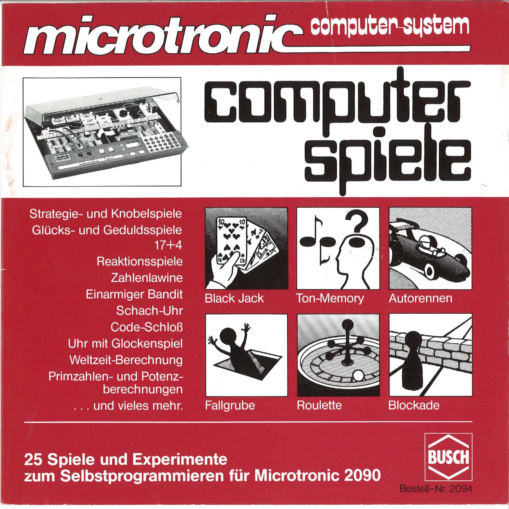
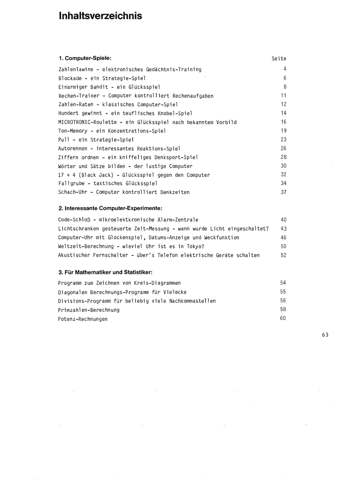
| Number Avalanche – electronic memory training | 4 |
| Blockade – a strategy game | 6 |
| One-Armed Bandit – a game of chance | 8 |
| Arithmetic Trainer – the computer checks arithmetic problems | 11 |
| Number Guessing (High-Low Game) – classic computer game | 12 |
| A Hundred Wins – a devilish puzzle game | 14 |
| MICROTRONIC Roulette – a game of chance on a well-known model | 16 |
| Sound Memory – a concentration game | 19 |
| Pull – a strategy game | 23 |
| Car Race – an interesting reaction game | 26 |
| Sorting Digits – a tricky brain-teaser | 28 |
| Forming Words and Sentences – the funny computer | 30 |
| 17 + 4 (Black Jack) – a game of chance against the computer | 32 |
| Fallgrube (Pitfall) – a tactical game of chance | 34 |
| Chess Clock – the computer checks thinking times | 37 |
| Code Lock – a microelectronic alarm centre | 40 |
| Light-barrier controlled time measurement – when was the light switched on? | 43 |
| Clock with chimes, date display and alarm function | 46 |
| World Time Calculation – what time is it in Tokyo? | 50 |
| Acoustic Computer Remote Switching – switching electrical devices by telephone | 52 |
| Program for drawing pie charts | 54 |
| Diagonal calculation program for polygons | 55 |
| Division program for any number of decimal places | 56 |
| Prime number calculation | 58 |
| Exponentiation | 60 |
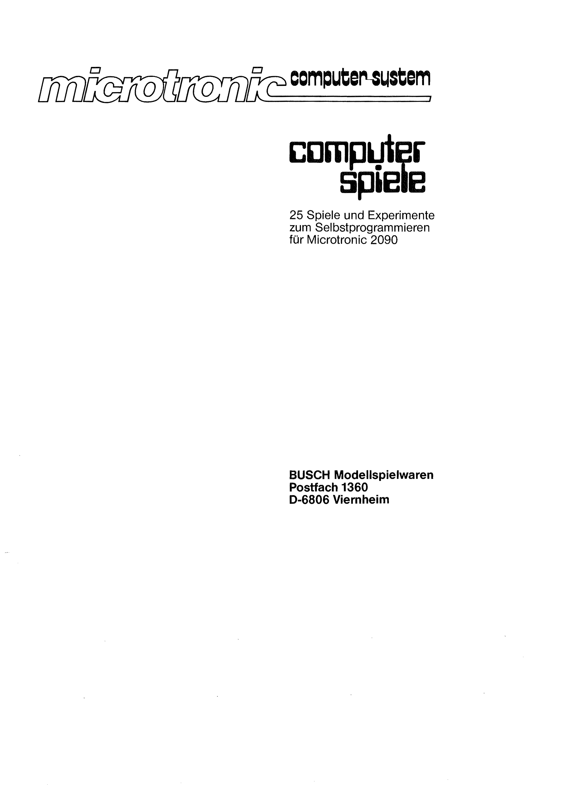
25 games and experiments
to program yourself
for Microtronic 2090
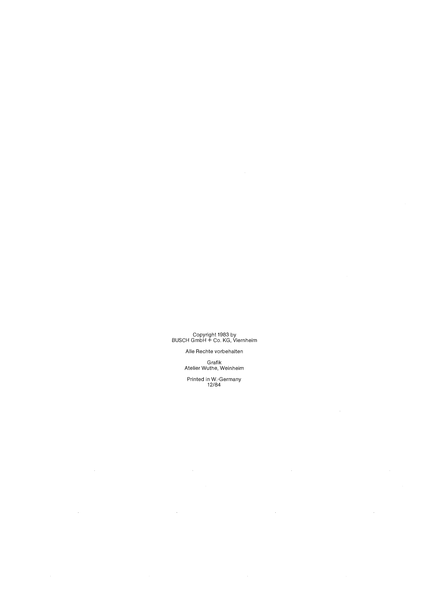
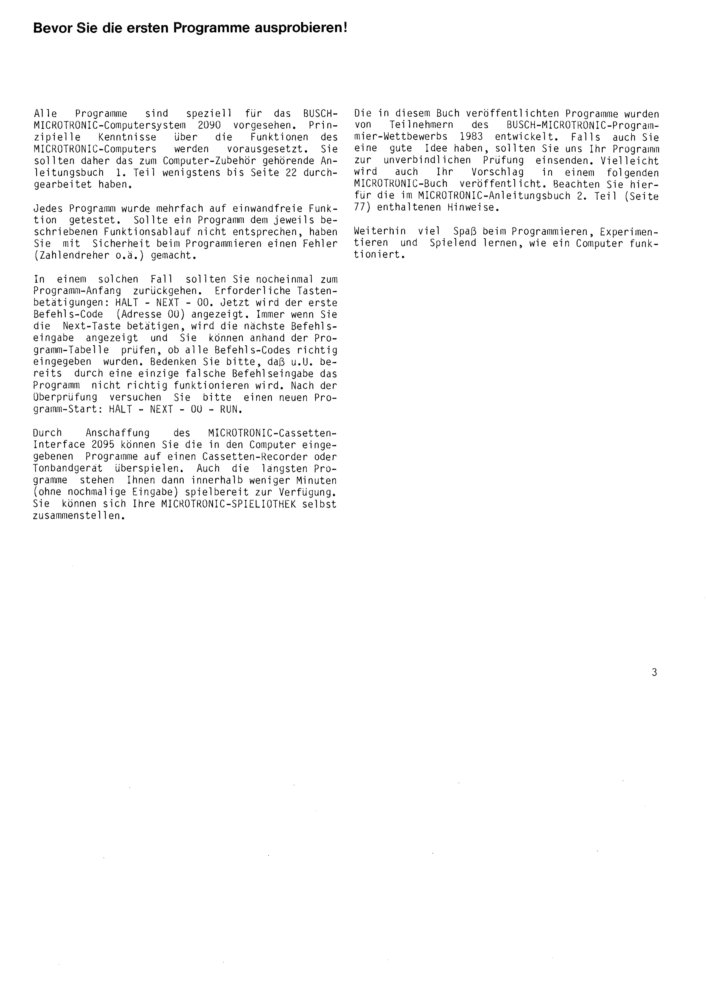
All programs are intended specifically for the BUSCH MICROTRONIC computer system 2090. A basic knowledge of the functions of the MICROTRONIC computer is assumed. You should therefore have worked through the instruction book Part 1 supplied with the computer at least as far as page 22.
Every program has been tested several times for correct operation. If a program does not behave as described, you have certainly made a mistake while programming (transposed digits or similar).
In such a case you should go back to the start of the program once more. Required key presses: HALT – NEXT – 00. The first instruction code (address 00) is now displayed. Each time you press the NEXT key the next instruction entry is displayed, and you can use the program table to check whether all instruction codes have been entered correctly. Please bear in mind that a single incorrect instruction entry may be enough to stop the program working properly. After checking, please try a new program start: HALT – NEXT – 00 – RUN.
By purchasing the MICROTRONIC cassette interface 2095 you can transfer the programs entered into the computer onto a cassette recorder or tape machine. Even the longest programs are then ready to play within a few minutes, without having to be entered again. You can put together your own MICROTRONIC program library.
The programs published in this book were developed by entrants to the BUSCH MICROTRONIC programming competition of 1983. If you too have a good idea, you should send us your program for informal appraisal. Perhaps your suggestion will also be published in a following MICROTRONIC book. Please note the guidance given in the MICROTRONIC instruction book Part 2 (page 77).
We wish you continued enjoyment in programming, experimenting and learning through play how a computer works.
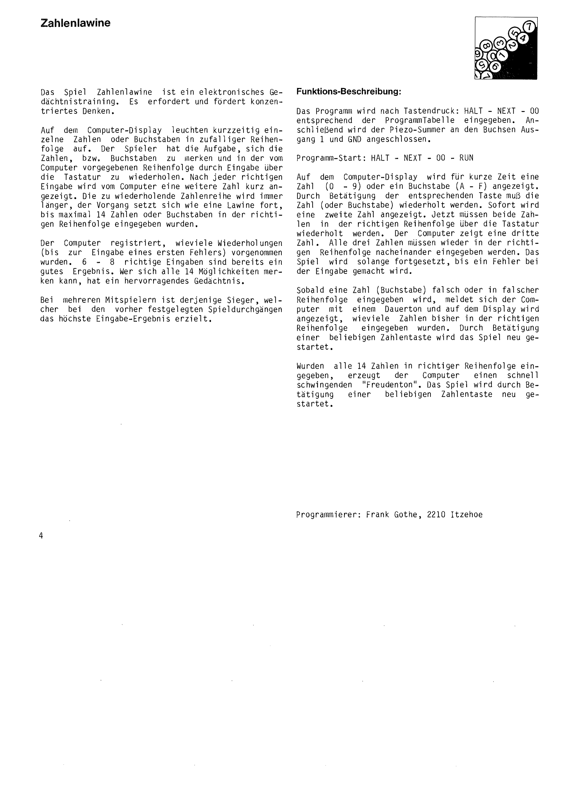
The game Number Avalanche is an electronic memory exercise. It demands and develops concentrated thinking.
Individual numbers or letters light up briefly on the computer display in random order. The player's task is to memorise the numbers or letters and repeat them, in the order the computer gave them, by entering them on the keypad. After each correct entry the computer briefly shows a further number. The sequence to be repeated grows ever longer; the process continues like an avalanche, up to a maximum of 14 numbers or letters entered in the correct order.
The computer records how many repetitions were made before the first mistake. Six to eight correct entries is already a good result. Anyone who can remember all 14 has an outstanding memory.
With several players, the winner is the one who achieves the highest entry score over the agreed number of rounds.
After pressing HALT – NEXT – 00 the program is entered according to the program table. The piezo buzzer is then connected to the output 1 and GND sockets.
Program start: HALT – NEXT – 00 – RUN
A number (0 – 9) or a letter (A – F) is shown briefly on the computer display. The number or letter must be repeated by pressing the corresponding key. A second number is shown immediately. Both numbers must now be repeated on the keypad in the correct order. The computer shows a third number. All three numbers must again be entered one after another in the correct order.
The game continues until a mistake is made during entry.
As soon as a number or letter is entered incorrectly, or in the wrong order, the computer responds with a continuous tone and the display shows how many numbers were entered in the correct order. Pressing any number key restarts the game.
If all 14 numbers are entered in the correct order, the computer produces a rapidly warbling “tone of joy”. The game is restarted by pressing any number key.
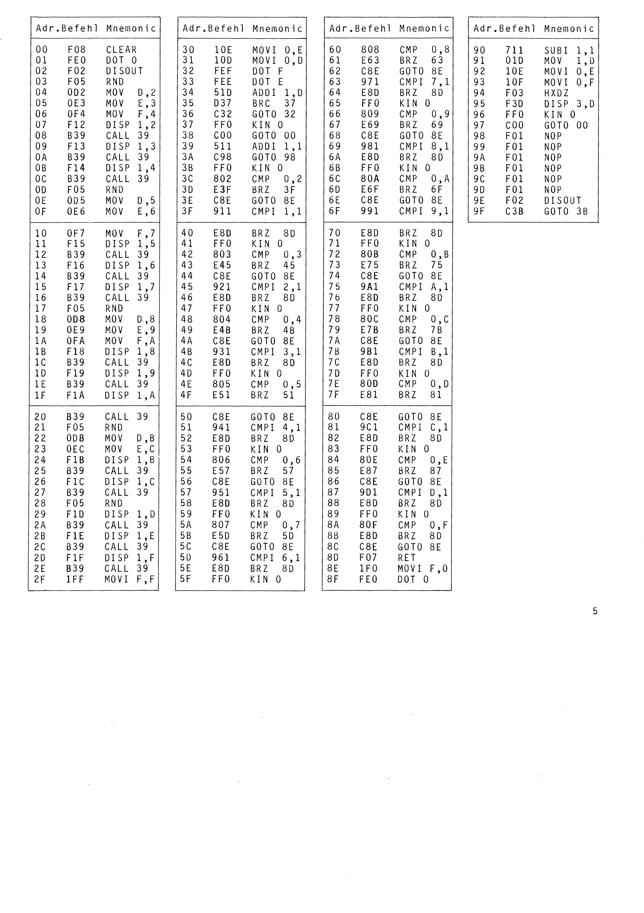
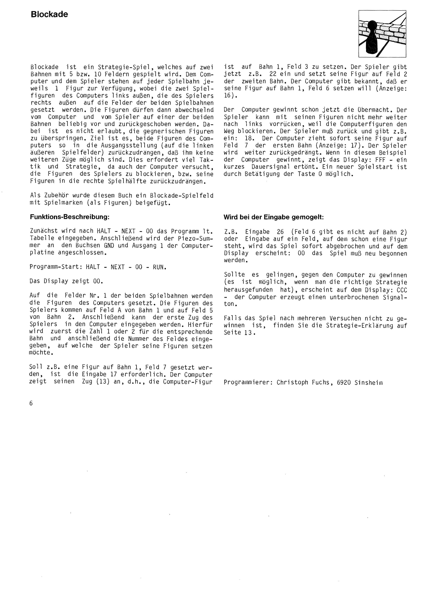
Blockade is a strategy game played on two tracks of 5 and 10 squares. The computer and the player each have one piece on each track; the computer's two pieces are placed at the far left of the tracks and the player's at the far right. The pieces may then be pushed freely forwards and backwards along either track, the computer and the player taking turns. Jumping over the opponent's pieces is not permitted. The aim is to force both of the computer's pieces back into their starting position, on the leftmost squares, so that it has no moves left. This takes a good deal of tactics and strategy, since the computer also tries to block the player's pieces and force them back into the right-hand half of the board.
A Blockade playing field with counters, to serve as pieces, is supplied with this book.
First the program is entered after HALT – NEXT – 00 according to the table. The piezo buzzer is then connected to the GND and output 1 sockets on the computer board.
Program start: HALT – NEXT – 00 – RUN. The display shows 00.
The computer's pieces are placed on square 1 of each track. The player's pieces go on square A of track 1 and square 5 of track 2. The player's first move can then be entered into the computer. To do this, first enter 1 or 2 for the track, then the number of the square the player wishes to move to.
To place a piece on track 1, square 7, for example, the entry 17 is required. The computer shows its move (13), that is, the computer piece
is to be placed on track 1, square 3. The player now enters 22, say, and places a piece on square 2 of the second track. The computer announces that it wants to place its piece on track 1, square 6 (display: 16).
The computer already has the upper hand. The player can no longer advance further to the left, because the computer's pieces block the way. The player must retreat and enters, for example, 18. The computer immediately moves its piece to square 7 of the first track (display: 17). The player is pushed back further.
If the computer wins in this example, the display shows FFF and a short continuous signal sounds. A new game can be started by pressing key 0.
If, for example, 26 is entered (square 6 does not exist on track 2), or a move is entered onto a square already occupied by a piece, the game is broken off at once and the display shows 00 – the game must be started again.
If you manage to beat the computer, which is possible once you have worked out the right strategy, the display shows CCC and the computer produces an interrupted signal tone.
If you cannot win the game after several attempts, you will find the strategy explained on page 13.
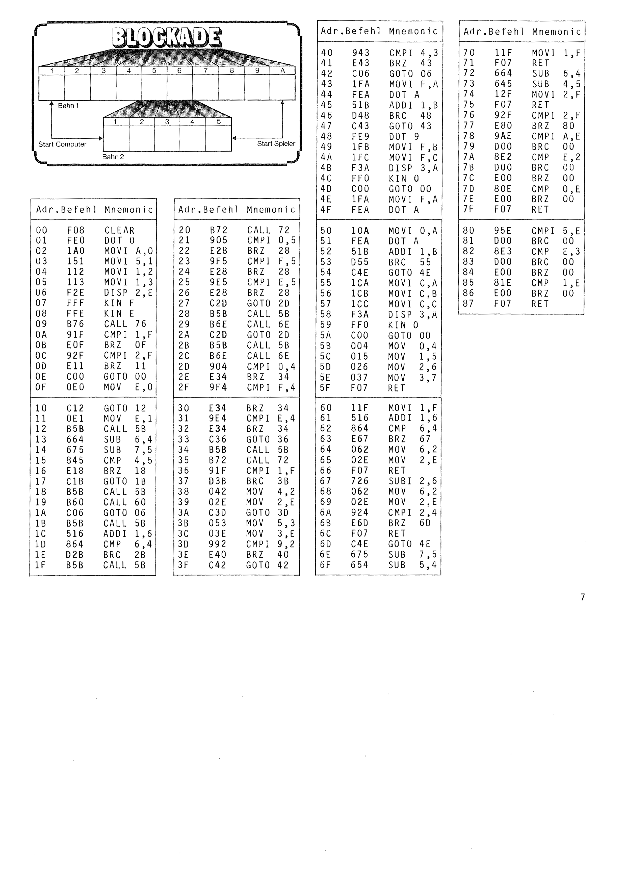
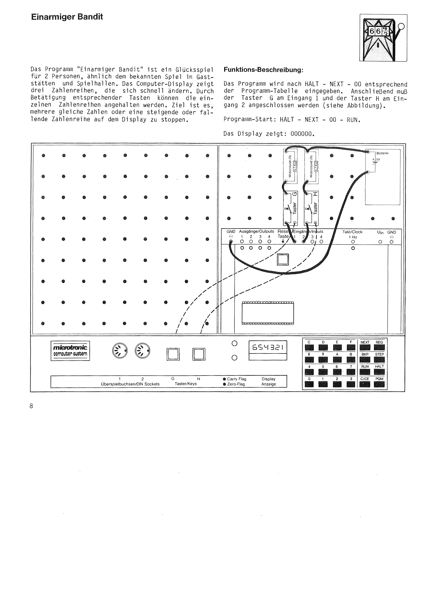
The program “One-Armed Bandit” is a game of chance for 2 players, similar to the well-known machine found in pubs and amusement arcades. The computer display shows three rows of digits which change rapidly. The individual rows can be stopped by pressing the appropriate keys. The aim is to stop the display on several identical digits, or on a rising or falling sequence.
The program is entered after HALT – NEXT – 00 according to the program table. Push-button G must then be connected to input 1 and push-button H to input 2 (see illustration).
Program start: HALT – NEXT – 00 – RUN. The display shows: 000000.
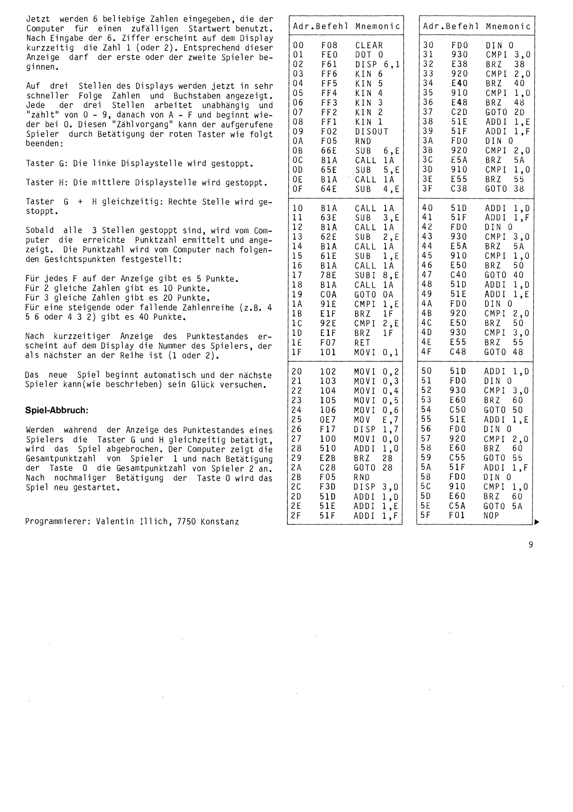
Now 6 arbitrary digits are entered, which the computer uses as a random starting value. After the 6th digit has been entered, the number 1 (or 2) appears briefly on the display. According to this, the first or the second player may begin.
Numbers and letters are now shown in very rapid succession at three positions of the display. Each of the three positions works independently and “counts” from 0 – 9, then from A – F, and begins again at 0. The player whose turn it is can stop this counting with the red push-buttons as follows:
Button G: the left display position is stopped.
Button H: the middle display position is stopped.
Buttons G + H together: the right position is stopped.
As soon as all 3 positions have been stopped, the computer works out the score achieved and displays it. The score is determined by the computer on the following basis:
For each F on the display there are 5 points.
For 2 identical digits there are 10 points.
For 3 identical digits there are 20 points.
For a rising or falling sequence (for example 4 5 6 or 4 3 2) there are 40 points.
After the score has been shown briefly, the display shows the number of the player whose turn is next (1 or 2). The new game begins automatically and the next player can try their luck as described.
If buttons G and H are pressed together while a player's score is being displayed, the game is ended. The computer shows the total score of player 1 and, after key 0 is pressed, the total score of player 2. Pressing key 0 once more restarts the game.
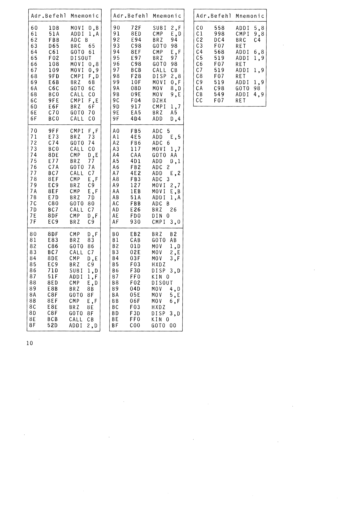
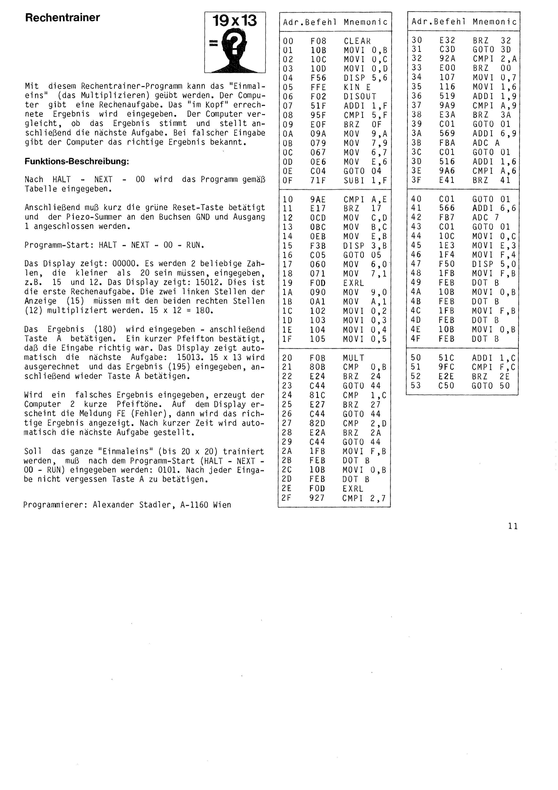
This arithmetic trainer program lets you practise multiplication tables. The computer sets a sum. The result, worked out in your head, is entered. The computer checks whether the result is correct and then sets the next sum. If the entry is wrong, the computer shows the correct result.
After HALT – NEXT – 00 the program is entered according to the table. The green reset key must then be pressed briefly and the piezo buzzer connected to the GND and output 1 sockets.
Program start: HALT – NEXT – 00 – RUN. The display shows 00000. Two arbitrary numbers, which must be smaller than 20, are entered, for example 15 and 12. The display shows 15012. This is the first sum. The two left-hand positions of the display (15) must be multiplied by the two right-hand positions (12). 15 × 12 = 180.
The result (180) is entered, then key A is pressed. A short beep confirms that the entry was correct. The display automatically shows the next sum: 15013. 15 × 13 is worked out and the result (195) entered, then key A pressed again.
If a wrong result is entered, the computer produces 2 short beeps. The message FE (error) appears on the display, then the correct result is shown. After a short time the next sum is set automatically.
To practise the whole multiplication table up to 20 × 20, enter 0101 after the program start (HALT – NEXT – 00 – RUN). Do not forget to press key A after every entry.
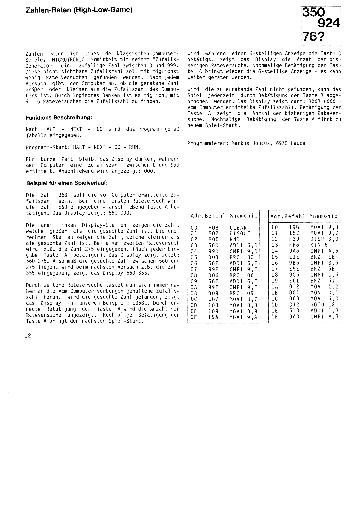
Number guessing is one of the classic computer games. MICROTRONIC uses its random number generator to pick a number between 0 and 999. The aim is to find this hidden random number in as few guesses as possible. After each attempt the computer indicates whether the guessed number is larger or smaller than the computer's number. With logical thinking it is possible to find it in 5 to 6 guesses.
After HALT – NEXT – 00 the program is entered according to the table.
Program start: HALT – NEXT – 00 – RUN. The display stays dark for a short time while the computer picks a random number between 0 and 999. It then shows: 000.
If key C is pressed while a 6-digit display is showing, the display shows the number of guesses made so far. Pressing key C again brings back the 6-digit display and guessing can continue.
If the number cannot be found, the game can be broken off at any time by pressing key B. The display then shows BXXXB (XXX = the random number picked by the computer). Pressing key A shows the number of guesses made so far. Pressing key A again starts a new game.
Suppose 368 is the random number picked by the computer. For a first guess the number 560 is entered, then key A is pressed. The display shows: 560 000. The three left-hand positions show the number that is larger than the number sought; the three right-hand positions show the number that is smaller.
For a second guess the number 275 is entered, say, pressing key A after every entry. The display now shows: 560 275. The number sought must therefore lie between 560 and 275. If 355 is entered on the next attempt, the display shows 560 355.
With further guesses you feel your way closer and closer to the number the computer is keeping hidden. When the number is found, the display in our example shows E368E. Pressing key A again shows the number of guesses. Pressing key A once more starts the next game.
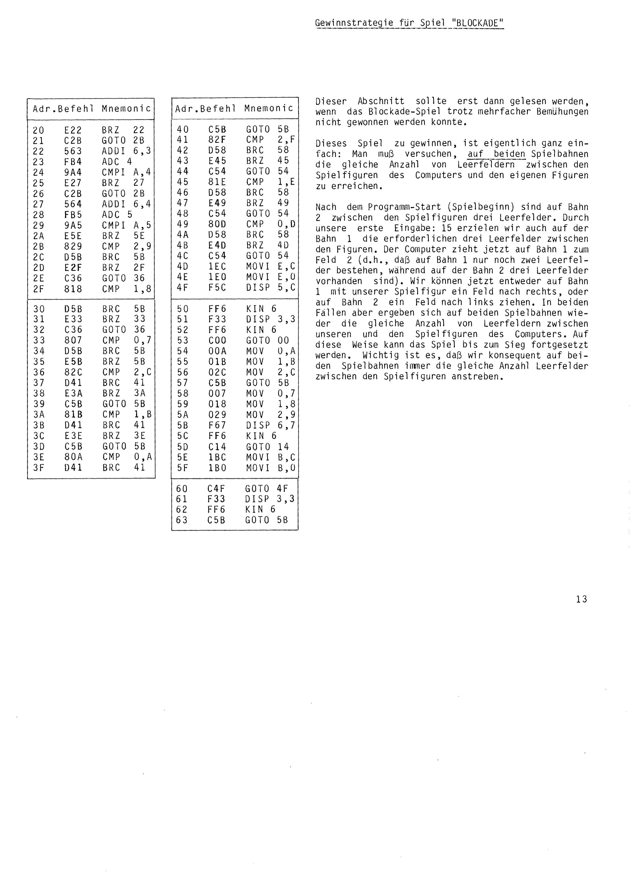
This section should only be read once the Blockade game has proved impossible to win despite repeated attempts.
Winning this game is actually quite simple: you must try to achieve the same number of empty squares between the computer's pieces and your own on both tracks.
After the program start, at the beginning of play, there are three empty squares between the pieces on track 2. With our first entry, 15, we achieve the necessary three empty squares between the pieces on track 1 as well. The computer now moves to square 2 on track 1, which means only two empty squares remain on track 1 while there are three on track 2. We can now either move our piece one square to the right on track 1, or one square to the left on track 2. In both cases the same number of empty squares between our pieces and the computer's is restored on both tracks.
The game can be continued in this way until victory. The important thing is that we consistently aim for the same number of empty squares between the pieces on both tracks.
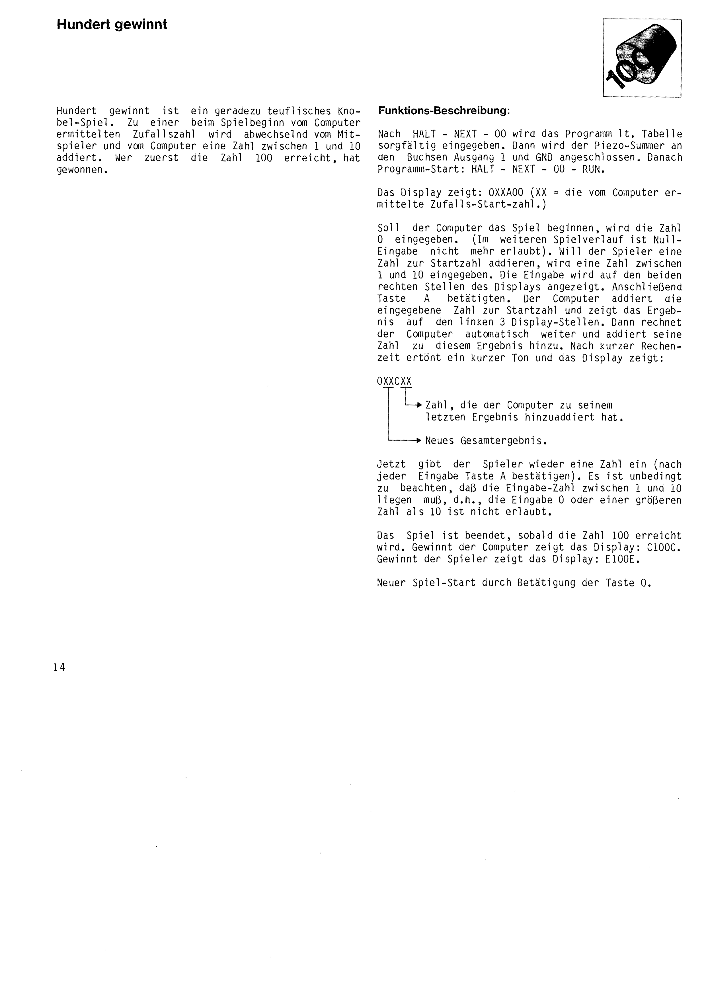
A Hundred Wins is a positively fiendish puzzle game. A number between 1 and 10 is added in turn by the player and by the computer to a random number picked by the computer at the start of play. Whoever reaches 100 first has won.
After HALT – NEXT – 00 the program is entered carefully according to the table. The piezo buzzer is then connected to the output 1 and GND sockets. Then program start: HALT – NEXT – 00 – RUN.
The display shows: 0XXA00 (XX = the random starting number picked by the computer).
If the computer is to begin the game, the number 0 is entered. Entering zero is not allowed later in the game. If the player wants to add a number to the starting number, a number between 1 and 10 is entered. The entry is shown on the two right-hand positions of the display. Then press key A. The computer adds the entered number to the starting number and shows the result on the left-hand 3 display positions. The computer then carries on automatically and adds its own number to that result. After a short calculation a brief tone sounds and the display shows:
Now the player enters a number again, confirming with key A after each entry. It is essential to note that the entered number must lie between 1 and 10; entering 0, or a number greater than 10, is not permitted.
The game ends as soon as the number 100 is reached. If the computer wins, the display shows: C100C. If the player wins, the display shows: E100E. A new game is started by pressing key 0.
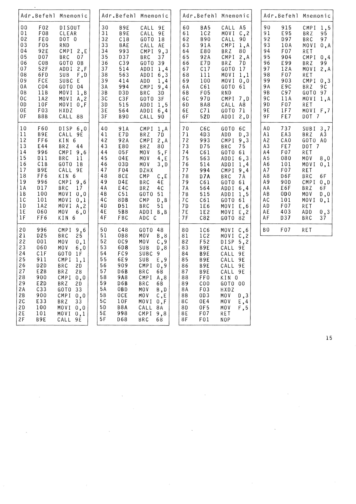
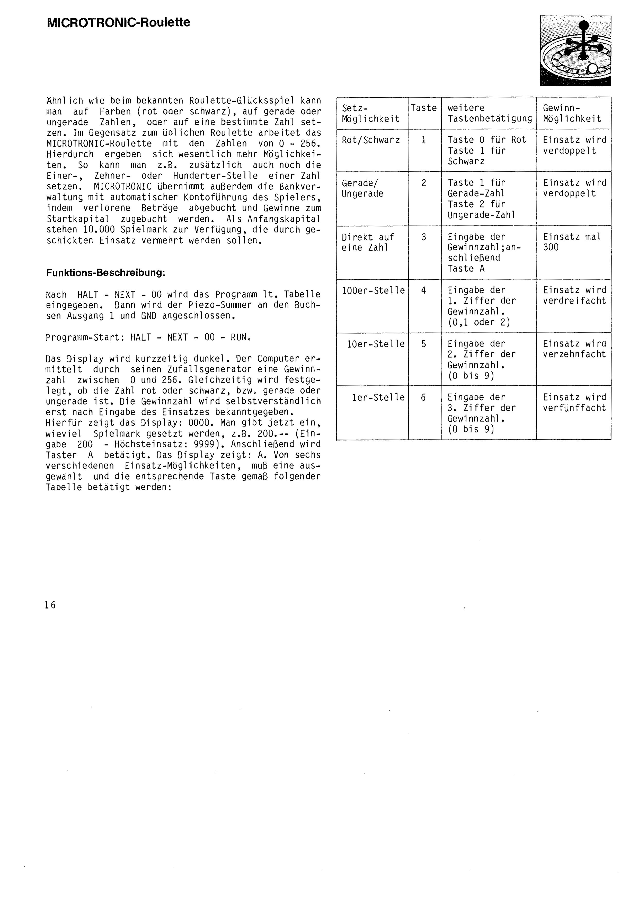
As in the well-known game of roulette, you can bet on colours (red or black), on even or odd numbers, or on a particular number. Unlike ordinary roulette, MICROTRONIC roulette works with the numbers 0 – 256. This gives considerably more possibilities: you can also bet on the units, tens or hundreds digit of a number, for example. MICROTRONIC additionally acts as the bank, keeping the player's account automatically, debiting losses and crediting winnings to the starting capital. A starting capital of 10,000 play marks is available, to be increased by skilful betting.
After HALT – NEXT – 00 the program is entered according to the table. The piezo buzzer is then connected to the output 1 and GND sockets.
Program start: HALT – NEXT – 00 – RUN.
The display goes dark briefly. The computer uses its random generator to pick a winning number between 0 and 256. At the same time it decides whether the number is red or black, and even or odd. The winning number is of course not revealed until the stake has been entered. For this the display shows: 0000. You now enter how many play marks are being staked, for example 200 (entry 200; maximum stake 9999). Then press key A. The display shows: A. One of six different betting options must be chosen and the corresponding key pressed according to the following table:
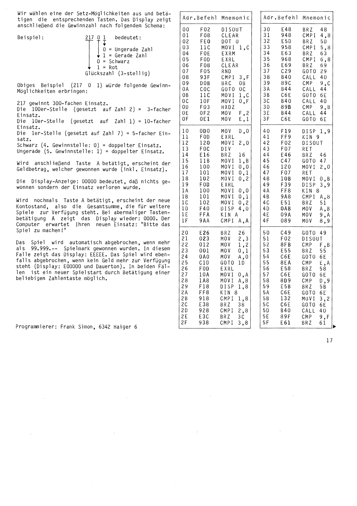
We choose one of the betting options and press the corresponding keys. The display then shows the winning number according to the following scheme:
The example above (217 0 1) would produce the following winnings:
217 wins 300 times the stake.
The hundreds digit (bet on the number 2) = 3 times the stake.
The tens digit (bet on the number 1) = 10 times the stake.
The units digit (bet on the number 7) = 5 times the stake.
Black (4th winning position: 0) = double the stake.
Odd (5th winning position: 1) = double the stake.
If key A is then pressed, the sum of money won appears, including the stake. A display of 00000 means that nothing was won and the stake was lost.
If key A is pressed again, the new account balance appears, that is, the total available for further games. On pressing key A once more the display shows 0000 again. The computer is waiting for your new stake: “place your bets!”
The game is ended automatically if more than 99,999 play marks have been won. In this case the display shows: EEEEE. The game is also ended if no money remains (display: E0000 and a continuous tone). In both cases a new game can be started by pressing any number key.
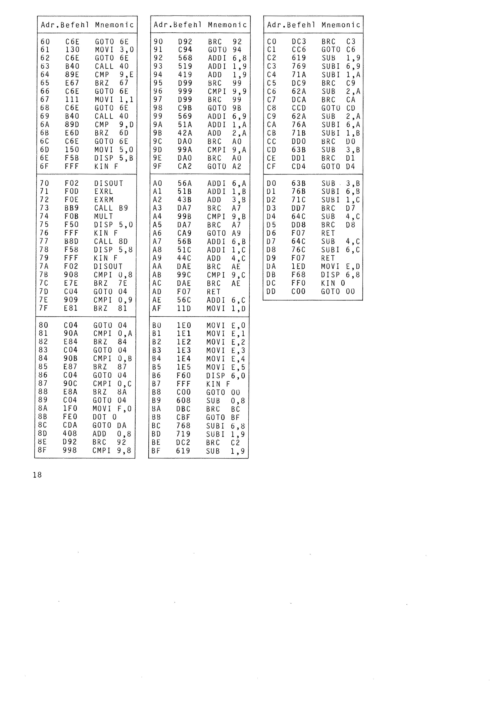
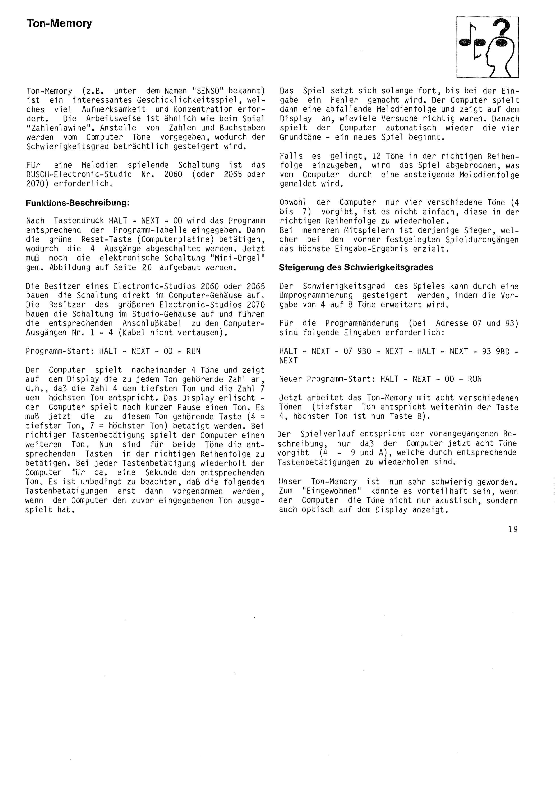
Sound Memory (known in English-speaking countries as “Simon”, and in Germany as “SENSO”) is an interesting game of skill that demands a great deal of attention and concentration. It works in much the same way as the game “Number Avalanche”. Instead of numbers and letters the computer plays tones, which increases the difficulty considerably. A BUSCH Electronic Studio no. 2060 (or 2065 or 2070) is required for the melody-playing circuit.
After pressing HALT – NEXT – 00 the program is entered according to the program table. Then press the green reset button (computer board), which switches off the 4 outputs. Now the electronic circuit “mini organ” still has to be built as shown in the illustration on page 20. Owners of an Electronic Studio 2060 or 2065 build the circuit directly in the computer housing. Owners of the larger Electronic Studio 2070 build the circuit in the studio housing and run the appropriate connecting cables to computer outputs no. 1 – 4 (do not swap the cables).
Program start: HALT – NEXT – 00 – RUN
The computer plays 4 tones one after another and shows on the display the number belonging to each tone, that is, the number 4 corresponds to the lowest tone and the number 7 to the highest tone. The display goes out – after a short pause the computer plays a tone. The key belonging to that tone (4 = lowest tone, 7 = highest tone) must now be pressed. If the correct key is pressed, the computer plays a further tone. Now the corresponding keys for both tones must be pressed in the correct order. At each key press the computer repeats the corresponding tone for about one second. It is essential to note that the following key presses must not be made until the computer has finished playing the tone entered before.
The game continues until a mistake is made during entry. The computer then plays a descending sequence of notes and shows on the display how many attempts were correct. After that the computer automatically plays the four basic tones again – a new game begins.
If you succeed in entering 12 tones in the correct order, the game is ended, which the computer signals with an ascending sequence of notes.
Although the computer plays only four different tones (4 to 7), it is not easy to repeat them in the correct order. With several players, the winner is the one who achieves the highest entry score over the agreed number of rounds.
The difficulty of the game can be increased by reprogramming, extending the sequence from 4 to 8 tones. The following entries are required for the program change (at addresses 07 and 93):
HALT – NEXT – 07 9B0 – NEXT
HALT – NEXT – 93 9BD – NEXT
New program start: HALT – NEXT – 00 – RUN
The Sound Memory now works with eight different tones (the lowest tone is still key 4, the highest tone is now key B). Play follows the description above, except that the computer now plays eight tones (4 – 9 and A), which have to be repeated with the corresponding key presses.
Our Sound Memory has now become very difficult. To get used to it, it may be an advantage if the computer shows the tones not only acoustically but also visually on the display.
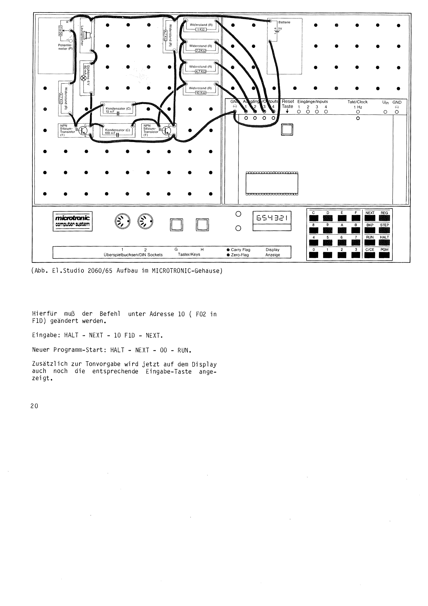
To do this the instruction at address 10 has to be changed (F02 to F1D).
Entry: HALT – NEXT – 10 F1D – NEXT.
New program start: HALT – NEXT – 00 – RUN.
In addition to playing the tone, the display now also shows the corresponding key to be pressed.
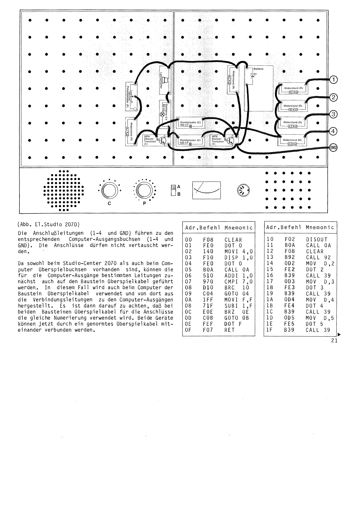
The connecting leads (1–4 and GND) run to the corresponding computer output sockets (1–4 and GND). The connections must not be swapped.
Since both the Studio Center 2070 and the computer have transfer sockets, the leads intended for the computer outputs can first be taken to the transfer-cable module. In that case the transfer-cable module is used on the computer as well, and the connections to the computer outputs are made from there. Care must then be taken to use the same numbering for the connections on both transfer-cable modules. The two units can now be linked to each other with a standard transfer cable.
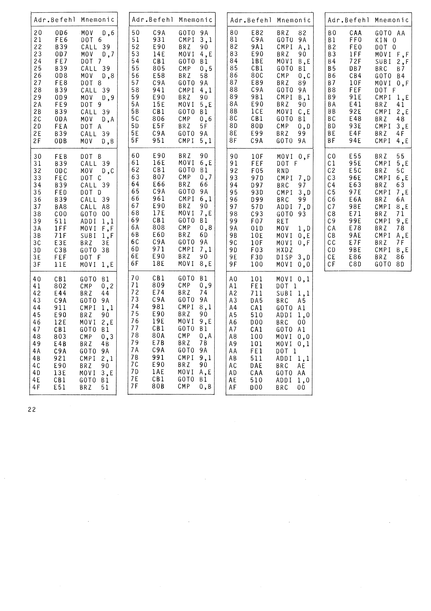
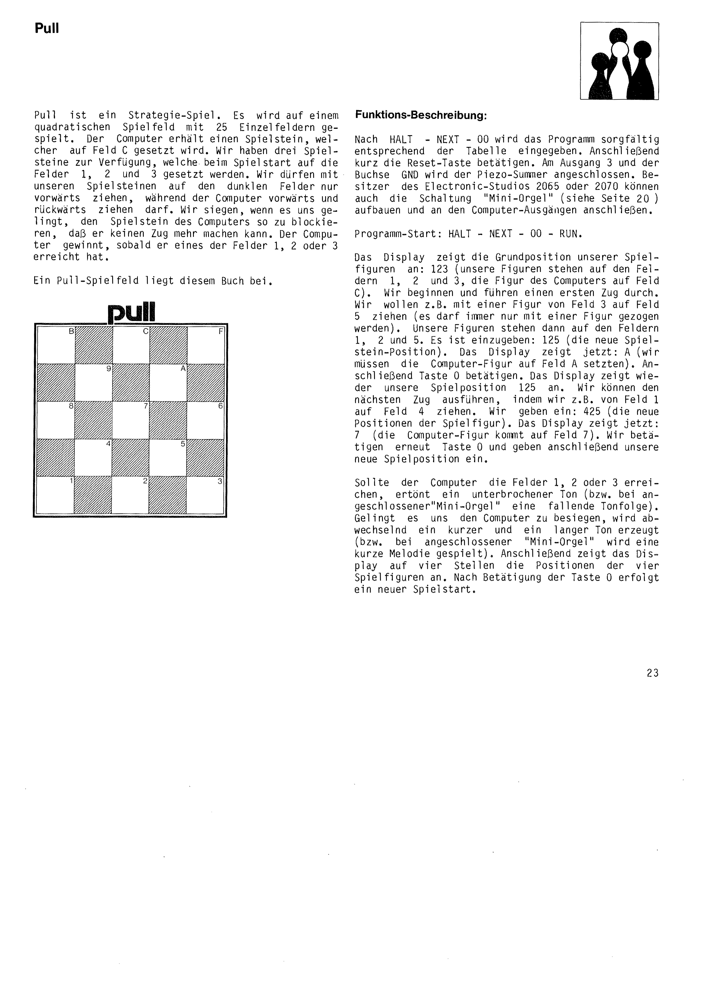
Pull is a strategy game. It is played on a square board of 25 individual squares. The computer gets one playing piece, which is placed on square C. We have three pieces, which are placed on squares 1, 2 and 3 at the start of the game. We may move our pieces forwards only on the dark squares, while the computer may move both forwards and backwards. We win if we manage to block the computer's piece so that it can make no further move. The computer wins as soon as it reaches one of the squares 1, 2 or 3. A Pull game board is enclosed with this book.
After HALT – NEXT – 00 the program is entered carefully according to the table. Then press the reset button briefly. The piezo buzzer is connected to output 3 and socket GND. Owners of the Electronic Studio 2065 or 2070 can also build the “mini organ” circuit (see page 20) and connect it to the computer outputs.
Program start: HALT – NEXT – 00 – RUN.
The display shows the starting position of our pieces: 123 (our pieces are on squares 1, 2 and 3, the computer's piece on square C). We begin and make a first move. Say we want to move a piece from square 3 to square 5 (only one piece may ever be moved at a time). Our pieces are then on squares 1, 2 and 5. We enter: 125 (the new piece positions). The display now shows: A (we must place the computer's piece on square A). Then press key 0. The display shows our position 125 again. We can make the next move, for example from square 1 to square 4. We enter: 425 (the new positions of the pieces). The display now shows: 7 (the computer's piece goes to square 7). We press key 0 again and then enter our new position.
If the computer reaches square 1, 2 or 3, an interrupted tone sounds (or, with the “mini organ” connected, a falling sequence of notes). If we manage to beat the computer, a short and a long tone are produced alternately (or, with the “mini organ” connected, a short melody is played). The display then shows the positions of the four pieces in four digits. Pressing key 0 starts a new game.
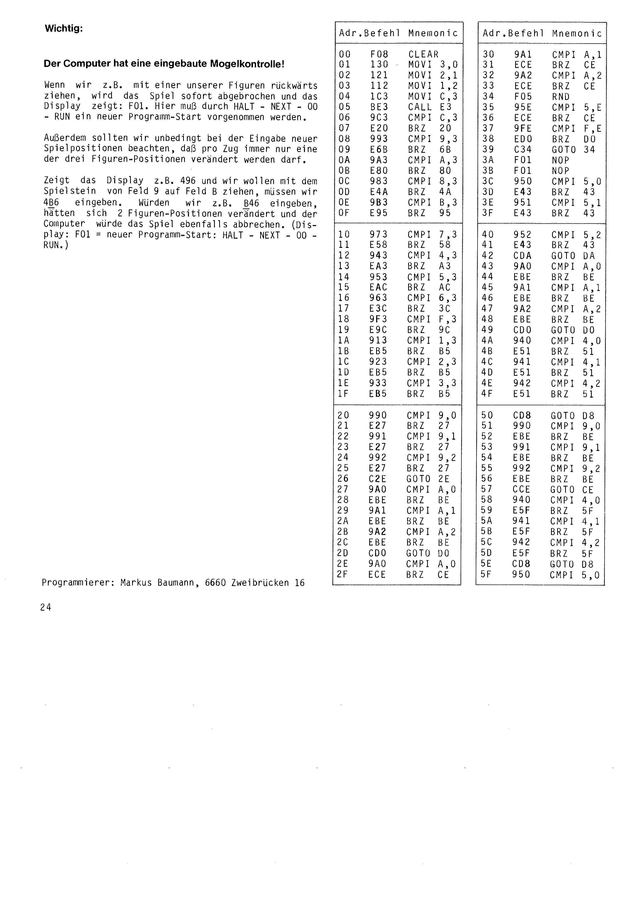
If, for instance, we move one of our pieces backwards, the game is broken off at once and the display shows: F01. A new program start must be made here with HALT – NEXT – 00 – RUN.
When entering new playing positions we should also make quite sure that only one of the three piece positions is changed per move. If the display shows, say, 496 and we want to move the piece from square 9 to square B, we have to enter 4B6. If we were to enter B46, two piece positions would have changed and the computer would likewise break off the game. (Display F01 = new program start: HALT – NEXT – 00 – RUN.)
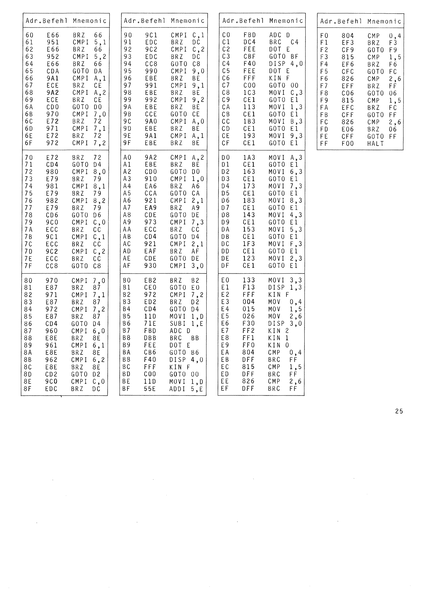
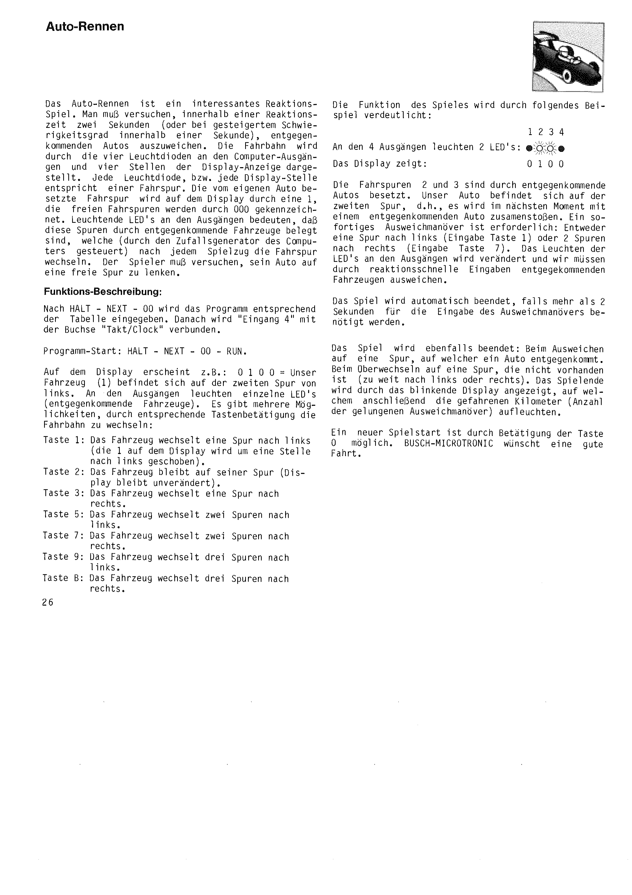
The car race is an interesting reaction game. You have to try to dodge oncoming cars within a reaction time of two seconds (or, at the increased difficulty level, within one second). The road is represented by the four LEDs at the computer outputs and by four places of the display. Each LED, or each display place, corresponds to one lane. The lane occupied by your own car is marked on the display by a 1, the free lanes are marked by 000. Lit LEDs at the outputs mean that those lanes are occupied by oncoming vehicles, which change lane after every move (controlled by the computer's random generator). The player has to try to steer their car into a free lane.
After HALT – NEXT – 00 the program is entered according to the table. Then “input 4” is connected to the socket “Takt/Clock”.
Program start: HALT – NEXT – 00 – RUN.
The display shows, for example: 0100 = our vehicle (1) is in the second lane from the left. Individual LEDs light up at the outputs (oncoming vehicles). There are several ways of changing lane by pressing the appropriate key:
Key 1: the vehicle moves one lane to the left (the 1 on the display is shifted one place to the left).
Key 2: the vehicle stays in its lane (the display remains unchanged).
Key 3: the vehicle moves one lane to the right.
Key 5: the vehicle moves two lanes to the left.
Key 7: the vehicle moves two lanes to the right.
Key 9: the vehicle moves three lanes to the left.
Key B: the vehicle moves three lanes to the right.
The way the game works is made clear by the following example:
2 LEDs are lit at the 4 outputs:
The display shows:
Lanes 2 and 3 are occupied by oncoming cars. Our car is in the second lane, that is, in a moment it will collide with an oncoming car. An immediate evasive manoeuvre is needed: either one lane to the left (press key 1) or two lanes to the right (press key 7). The pattern of lit LEDs at the outputs changes, and we have to dodge the oncoming vehicles with quick-reaction entries.
The game ends automatically if more than two seconds are needed to enter the evasive manoeuvre. The game also ends if we dodge into a lane in which a car is coming towards us, or if we move into a lane that does not exist (too far to the left or to the right). The end of the game is signalled by the flashing display, on which the kilometres driven (the number of successful evasive manoeuvres) then light up. A new game can be started by pressing key 0.
BUSCH MICROTRONIC wishes you a good trip.
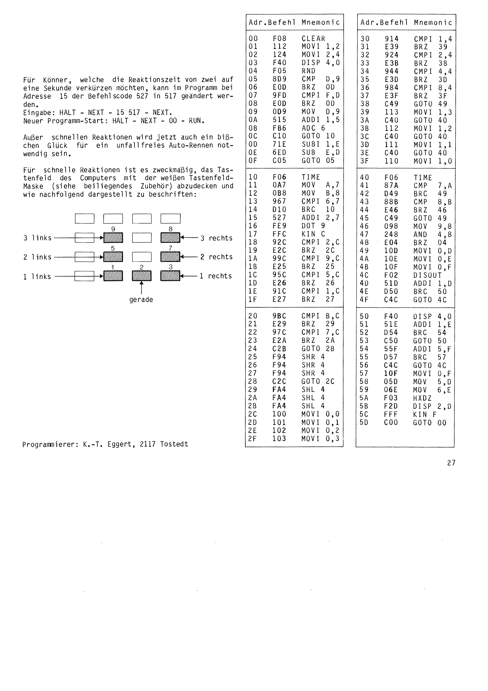
For experts who would like to shorten the reaction time from two seconds to one, the instruction code 527 at address 15 can be changed to 517 in the program. Entry: HALT – NEXT – 15 517 – NEXT. New program start: HALT – NEXT – 00 – RUN.
Besides fast reactions, a little luck will now also be needed for an accident-free car race.
For fast reactions it is a good idea to cover the computer's keypad with the white keypad mask (see the accessories enclosed) and to label it as shown below:
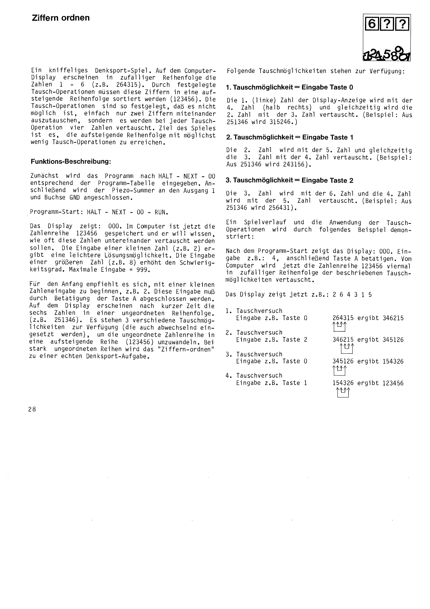
A tricky brain-teaser. The numbers 1 – 6 appear on the computer display in random order (e.g. 264315). These digits have to be sorted into ascending order (123456) by means of prescribed swap operations. The swap operations are laid down in such a way that it is not possible simply to exchange two digits with each other; instead four numbers are swapped in every swap operation. The aim of the game is to reach ascending order with as few swap operations as possible.
First the program is entered after HALT – NEXT – 00 according to the program table. Then the piezo buzzer is connected to output 1 and socket GND.
Program start: HALT – NEXT – 00 – RUN. The display shows: 000.
The computer has now stored the number sequence 123456 and wants to know how often these numbers are to be swapped among themselves. Entering a small number (e.g. 2) gives an easier puzzle. Entering a larger number (e.g. 8) increases the difficulty. Maximum entry = 999. To begin with it is advisable to start with a small number, e.g. 2. This entry has to be completed by pressing key A.
After a short time the six numbers appear on the display in a jumbled order (e.g. 251346). Three different swap operations are available (which may also be used in alternation) to turn the jumbled sequence into an ascending one (123456). With badly jumbled sequences, “sorting digits” becomes a real brain-teaser.
The following swap operations are available:
The 1st (left-hand) number of the display is exchanged with the 4th number (half right), and at the same time the 2nd number is exchanged with the 3rd. (Example: 251346 becomes 315246.)
The 2nd number is exchanged with the 5th and at the same time the 3rd number with the 4th. (Example: 251346 becomes 243156.)
The 3rd number is exchanged with the 6th and the 4th number with the 5th. (Example: 251346 becomes 256431.)
A game in progress and the use of the swap operations are demonstrated by the following example:
After the program start the display shows: 000. Enter e.g. 4, then press key A. The computer now swaps the number sequence 123456 four times, in a random order of the swap operations described. The display now shows, for example: 264315
1st swap attempt
entry e.g. key 0
2nd swap attempt
entry e.g. key 2
3rd swap attempt
entry e.g. key 0
4th swap attempt
entry e.g. key 1
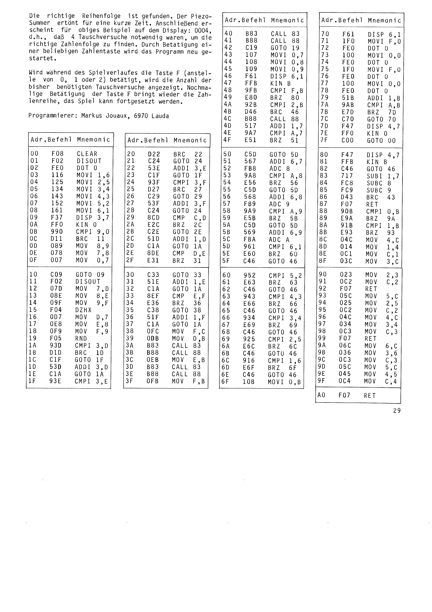
The correct order has been found. The piezo buzzer sounds for a short time. For the example above the display then shows: 0004, that is, 4 swap attempts were needed to find the correct number sequence. Pressing any number key restarts the program.
If key F is pressed during play (instead of 0, 1 or 2), the number of swap attempts needed so far is displayed. Pressing key F again brings back the number sequence and the game can be continued.
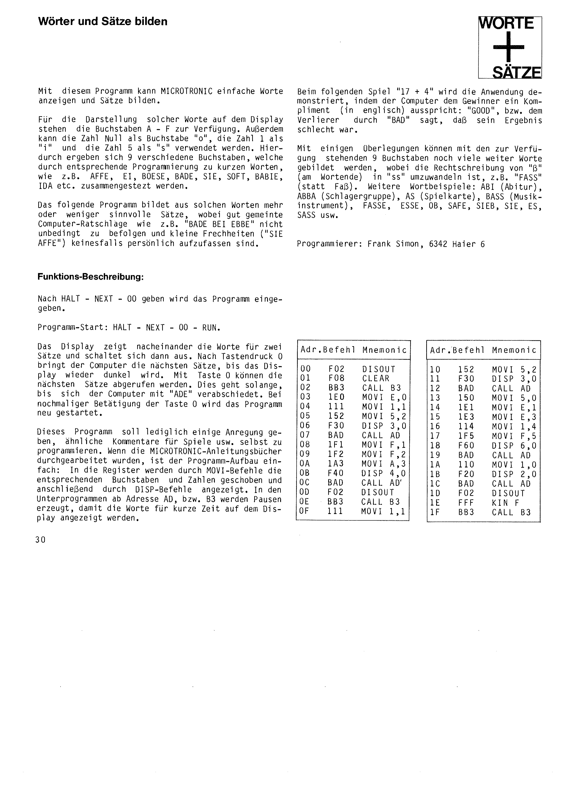
With this program MICROTRONIC can display simple words and form sentences.
The letters A – F are available for showing such words on the display. In addition the digit zero can be used as the letter “o”, the digit 1 as “i” and the digit 5 as “s”. This gives 9 different letters, which can be put together by suitable programming into short German words such as AFFE, EI, BOESE, BADE, SIE, SOFT, BABIE, IDA and so on.
The following program forms more or less sensible sentences from such words, whereby well-meant computer advice such as “BADE BEI EBBE” (bathe at low tide) need not necessarily be followed, and small cheeky remarks (“SIE AFFE” – you ape) should on no account be taken personally.
After HALT – NEXT – 00 the program is entered.
Program start: HALT – NEXT – 00 – RUN.
The display shows the words for two sentences one after the other and then switches off. After pressing key 0 the computer brings the next sentences, until the display goes dark again. Key 0 calls up the sentences that follow. This goes on until the computer takes its leave with “ADE” (farewell). Pressing key 0 once more restarts the program.
This program is only meant to give a few ideas for programming similar comments for games and the like yourself. Once the MICROTRONIC instruction books have been worked through, the structure of the program is simple: MOVI instructions move the appropriate letters and numbers into the registers, and DISP instructions then show them. The subroutines from address AD and B3 generate pauses so that the words are shown on the display for a short time.
The use of this is demonstrated in the following game “17 + 4”, where the computer pays the winner a compliment (in English): “GOOD”, or tells the loser with “BAD” that their result was poor.
With a little thought many more words can be formed from the 9 available letters, whereby the spelling “ß” (at the end of a word) has to be turned into “ss”, e.g. “FASS” (instead of Faß). Further examples of words: ABI (Abitur), ABBA (pop group), AS (playing card), BASS (musical instrument), FASSE, ESSE, OB, SAFE, SIEB, SIE, ES, SASS and so on.
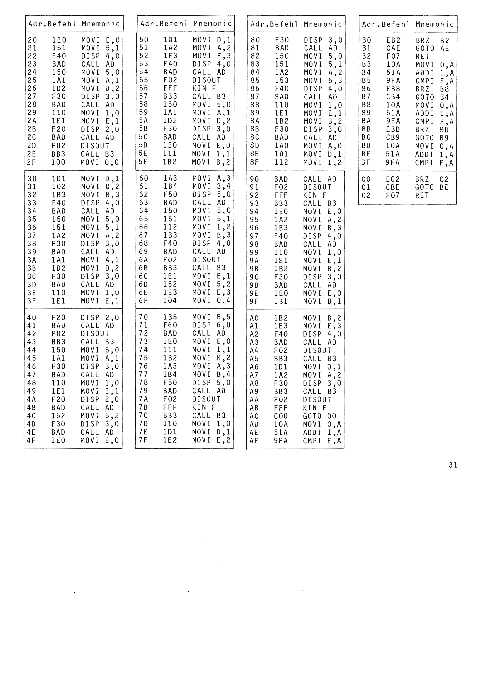
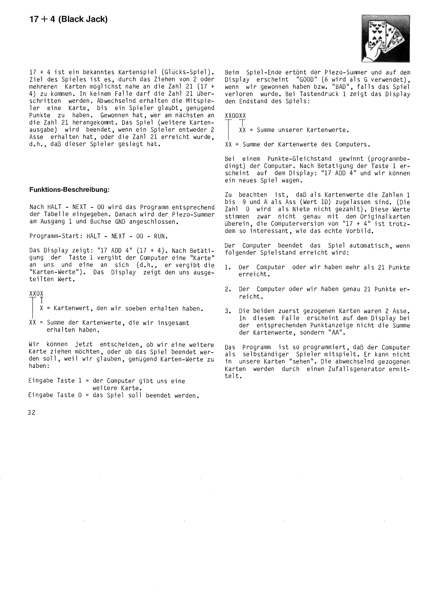
17 + 4 is a well-known card game (a game of chance). The aim of the game is to come as close as possible to the number 21 (17 + 4) by drawing 2 or more cards. Under no circumstances may 21 be exceeded. The players receive a card in turn until one of them believes they have enough points. The winner is the one who comes closest to 21. The game (further dealing of cards) is ended when a player has either received 2 aces or has reached 21, which means that this player has won.
After HALT – NEXT – 00 the program is entered according to the table. Then the piezo buzzer is connected to output 1 and socket GND.
Program start: HALT – NEXT – 00 – RUN.
The display shows: “17 ADD 4” (17 + 4). After key 1 is pressed the computer deals a “card” to us and one to itself (that is, it deals out the “card values”). The display shows the value dealt to us.
We can now decide whether we want to draw another card, or whether the game should be ended because we think we have enough card values:
Key 1 = the computer gives us another card.
Key 0 = the game is to be ended.
At the end of the game the piezo buzzer sounds and the display shows “GOOD” (6 is used as G) if we have won, or “BAD” if the game was lost. On pressing key 1 the display shows the final score of the game:
If the points are level the computer wins (that is how the program works). After pressing key 1 the display shows “17 ADD 4” and we can risk a new game.
Note that the numbers 1 to 9 and A as the ace (value 10) are allowed as card values. (The number 0 counts as a blank.) These values do not correspond exactly to the original cards, but the computer version of “17 + 4” is nevertheless just as interesting as the real model.
The computer ends the game automatically when the following score is reached:
1. The computer or we have reached more than 21 points.
2. The computer or we have reached exactly 21 points.
3. The first two cards drawn were 2 aces. In this case the display shows “AA” at the corresponding points position instead of the sum of the card values.
The program is written so that the computer plays as an independent player. It cannot “see” our cards. The cards drawn in turn are determined by a random generator.
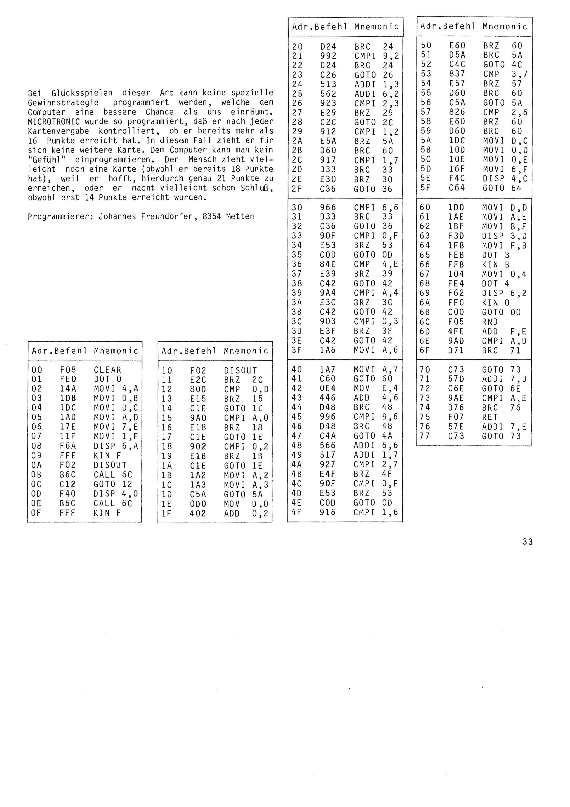
With games of chance of this kind no special winning strategy can be programmed that would give the computer a better chance than us. MICROTRONIC has been programmed so that after every deal it checks whether it has already reached more than 16 points. In that case it draws no further card for itself. A “feel” for the game cannot be programmed into a computer. A person may well draw another card (although they already have 18 points) because they hope to reach exactly 21 that way, or may stop even though only 14 points have been reached.
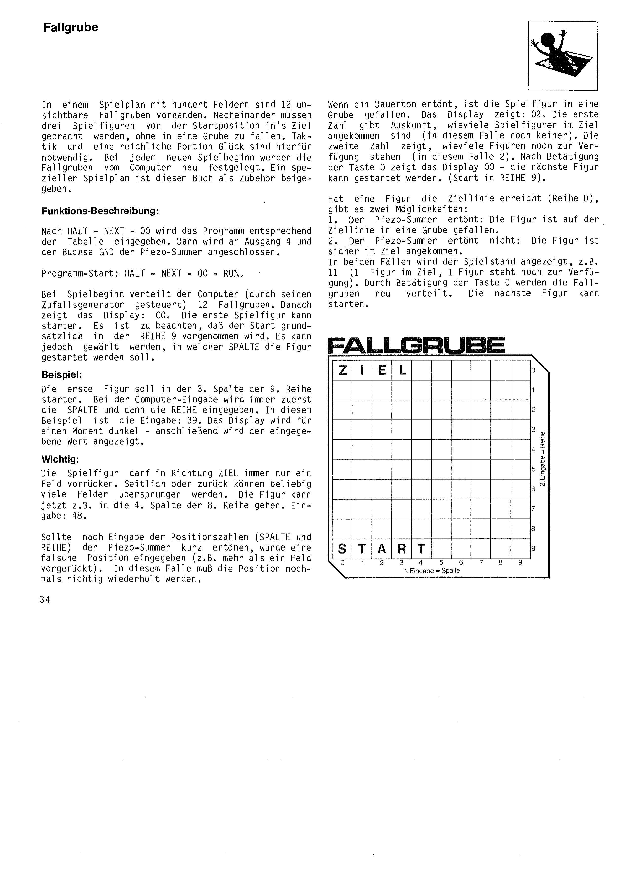
A game board of one hundred squares holds 12 invisible pitfalls. One after another, three playing pieces have to be brought from the starting position to the GOAL without falling into a pit. Tactics and a generous helping of luck are needed for this. Every time a new game begins the computer lays out the pitfalls afresh. A special game board is enclosed with this book as an accessory.
After HALT – NEXT – 00 the program is entered according to the table. Then the piezo buzzer is connected to output 4 and socket GND.
Program start: HALT – NEXT – 00 – RUN.
At the start of the game the computer distributes 12 pitfalls (controlled by its random generator). The display then shows: 00. The first playing piece can start. Note that the start is always made in ROW 9. You may, however, choose which COLUMN the piece starts in.
The first piece is to start in the 3rd column of row 9. When entering on the computer, the COLUMN is always entered first and then the ROW. In this example the entry is: 39. The display goes dark for a moment – then the value entered is shown.
The playing piece may only ever advance one square in the direction of the GOAL. Sideways or backwards it may skip any number of squares. The piece can now go, for example, to the 4th column of row 8. Entry: 48.
If the piezo buzzer sounds briefly after the position numbers (COLUMN and ROW) have been entered, a wrong position was entered (e.g. advanced by more than one square). In that case the position has to be repeated correctly.
If a continuous tone sounds, the playing piece has fallen into a pit. The display shows: 02. The first digit tells us how many pieces have reached the GOAL (in this case none so far). The second digit shows how many pieces are still available (in this case 2). After key 0 is pressed the display shows 00 – the next piece can be started. (Start in ROW 9.)
Once a piece has reached the goal line (row 0) there are two possibilities:
1. The piezo buzzer sounds: the piece has fallen into a pit on the goal line.
2. The piezo buzzer does not sound: the piece has arrived safely at the GOAL.
In both cases the score is displayed, e.g. 11 (1 piece at the GOAL, 1 piece still available). Pressing key 0 redistributes the pitfalls. The next piece can start.
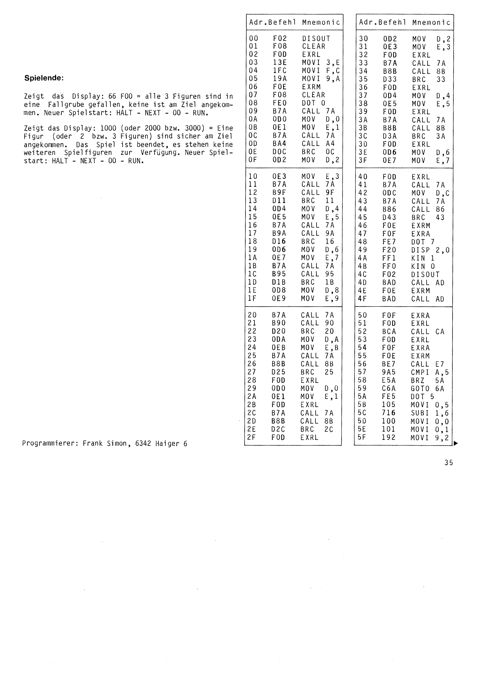
The display shows: 66 F00 = all 3 pieces have fallen into a pitfall, none has reached the GOAL. New game start: HALT – NEXT – 00 – RUN.
The display shows: 1000 (or 2000 or 3000) = one piece (or 2 or 3 pieces) has arrived safely at the GOAL. The game is over, no further playing pieces are available. New game start: HALT – NEXT – 00 – RUN.
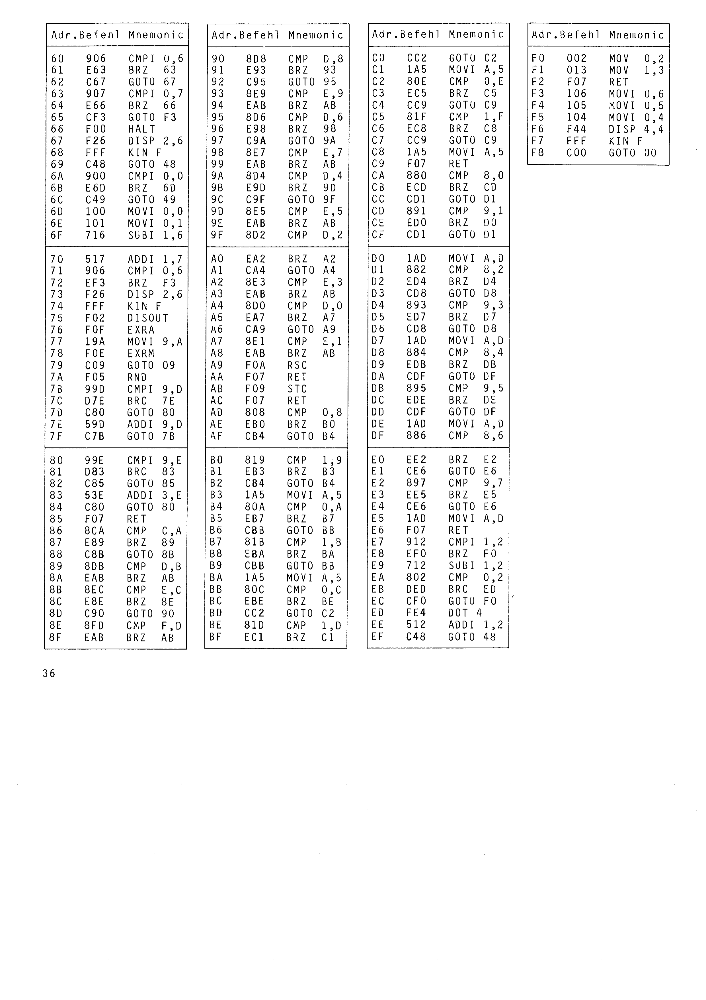
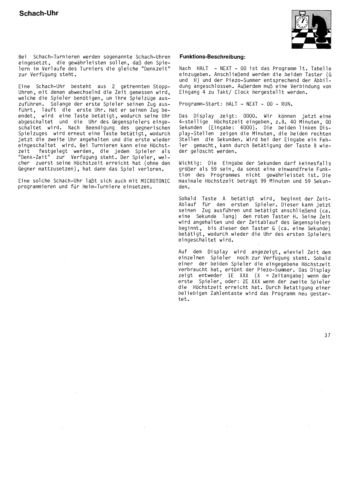
So-called chess clocks are used in chess tournaments to make sure that the players have the same amount of “thinking time” available in the course of the tournament.
A chess clock consists of 2 separate stopwatches with which the time the players need to make their moves is measured alternately. While the first player is making their move, the first clock runs. When they have finished their move a button is pressed, which switches their clock off and the opponent's clock on. When the opponent's move is finished a button is pressed again, which now stops the second clock and starts the first one again. In tournaments a maximum time can be laid down that is available to each player as “thinking time”. The player who reaches their maximum time first (without checkmating the opponent) has then lost the game.
Such a chess clock can also be programmed with MICROTRONIC and used for home tournaments.
After HALT – NEXT – 00 the program is entered as per the table. Then the two push-buttons (G and H) and the piezo buzzer are connected as shown in the illustration. A connection from input 4 to Takt/Clock must also be made.
Program start: HALT – NEXT – 00 – RUN.
The display shows: 0000. We can now enter a 4-digit maximum time, e.g. 40 minutes, 00 seconds (entry: 4000). The two left-hand display places show the minutes, the two right-hand places the seconds. If a mistake is made during entry it can be cleared again by pressing key B.
Important: the seconds entered must on no account be greater than 59, as otherwise correct operation of the program is not guaranteed. The maximum time is 99 minutes and 59 seconds.
As soon as key A is pressed, the time starts to run for the first player. They can now make their move and then press the red button H (for about one second). Their time is stopped and the opponent's time starts to run, until the opponent presses button G (for about one second), which switches the first player's clock on again. The display shows how much time each player still has available.
As soon as one of the two players has used up the maximum time entered, the piezo buzzer sounds. The display shows either 1E XXX (X = time) if the first player, or 2E XXX if the second player has reached the maximum time. Pressing any number key restarts the program.
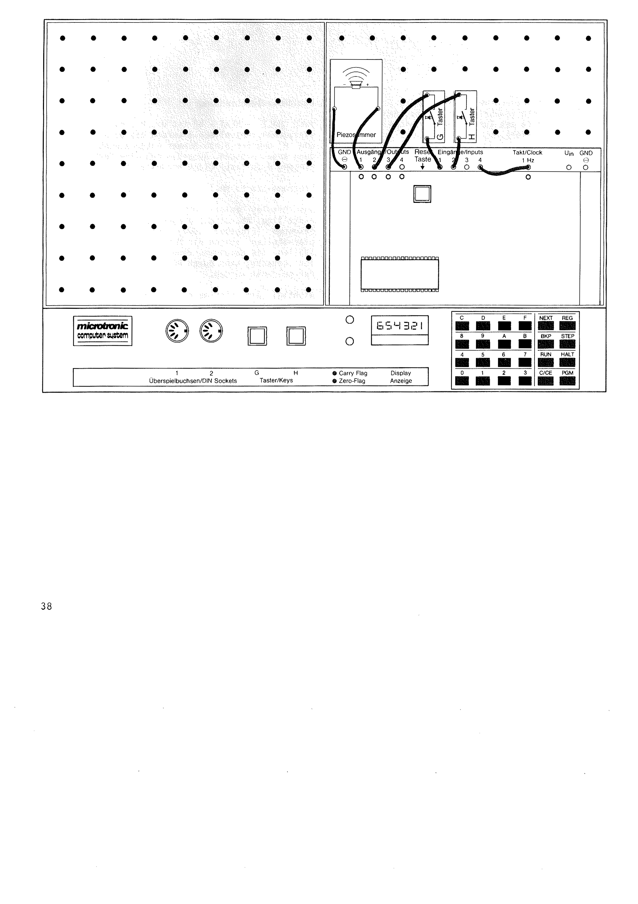
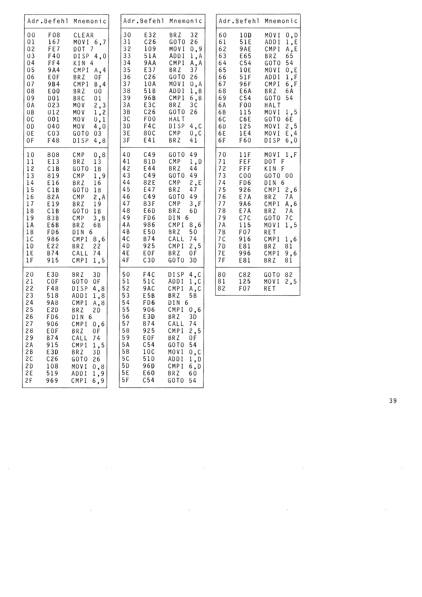
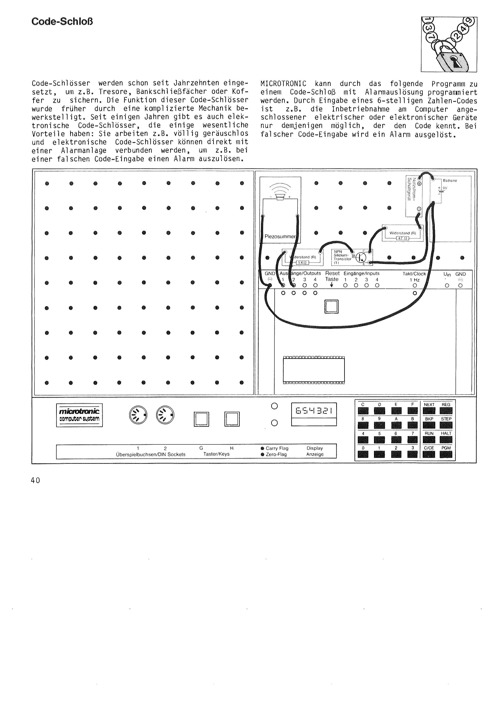
Code locks have been used for decades to secure safes, bank deposit boxes or suitcases, for example. The action of these code locks used to be achieved by complicated mechanics. For some years now there have also been electronic code locks, which have several important advantages: they work completely silently, for instance, and electronic code locks can be connected directly to an alarm system, so as to set off an alarm if a wrong code is entered, for example.
With the following program MICROTRONIC can be turned into a code lock with alarm triggering. By entering a 6-digit numerical code, electrical or electronic devices connected to the computer can be put into operation only by someone who knows the code. If a wrong code is entered, an alarm is set off.
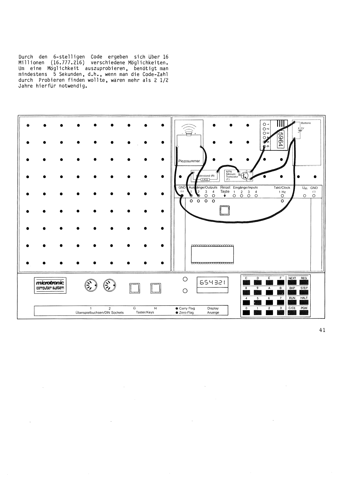
The 6-digit code gives more than 16 million (16,777,216) different possibilities. At least 5 seconds are needed to try one possibility, that is, if you wanted to find the code number by trial and error, more than 2 1/2 years would be needed for it.
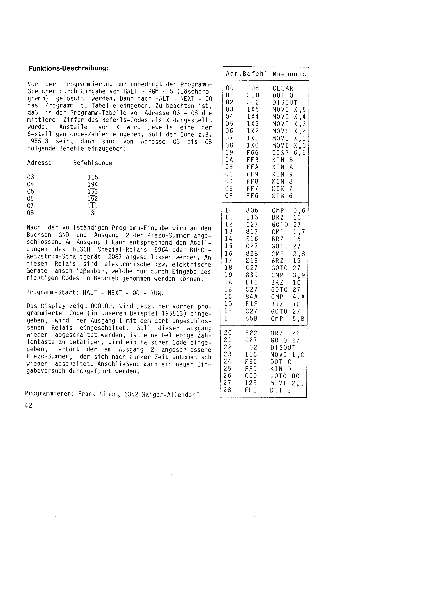
Before programming, the program memory must without fail be cleared by entering HALT – PGM – 5 (erase program). Then, after HALT – NEXT – 00, enter the program as per the table. Note that in the program table the middle digit of the instruction code is shown as X from address 03 to 08. In place of X one digit of the 6-digit code number is entered each time. If the code is to be 195513, for example, the following instructions have to be entered from address 03 to 08:
When the program has been entered completely, the piezo buzzer is connected to the GND and output 2 sockets. The BUSCH special relay 5964 or the BUSCH mains switching unit 2087 can be connected to output 1 as shown in the illustrations. Electronic or electrical devices can be connected to these relays, and they can only be put into operation by entering the correct code.
Program start: HALT – NEXT – 00 – RUN.
The display shows 000000. If the previously programmed code (195513 in our example) is now entered, output 1 is switched on together with the relay connected to it. If this output is to be switched off again, any number key has to be pressed. If a wrong code is entered, the piezo buzzer connected to output 2 sounds; it switches itself off again automatically after a short time. A new attempt at entry can then be made.
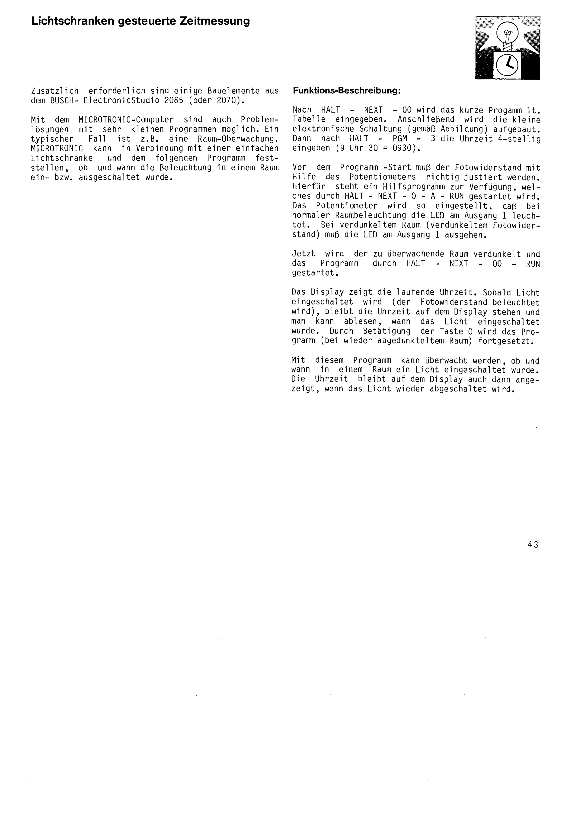
Also required are a few components from the BUSCH Electronic Studio 2065 (or 2070).
The MICROTRONIC computer can solve problems with very small programs too. A typical case is room monitoring, for example. In combination with a simple light barrier and the following program, MICROTRONIC can determine whether and when the lighting in a room was switched on or off.
After HALT – NEXT – 00 the short program is entered as per the table. Then the small electronic circuit is built (as shown in the illustration). Then, after HALT – PGM – 3, enter the time of day as 4 digits (9.30 = 0930).
Before the program is started the photoresistor has to be adjusted correctly with the potentiometer. A helper program is available for this, which is started with HALT – NEXT – 0 – A – RUN. The potentiometer is set so that the LED at output 1 lights up under normal room lighting. With the room darkened (the photoresistor darkened) the LED at output 1 must go out.
Now the room to be monitored is darkened and the program is started with HALT – NEXT – 00 – RUN. The display shows the running time of day. As soon as a light is switched on (the photoresistor is illuminated), the time stops on the display and you can read off when the light was switched on. Pressing key 0 continues the program (with the room darkened again).
With this program you can monitor whether and when a light was switched on in a room. The time stays shown on the display even if the light is switched off again.
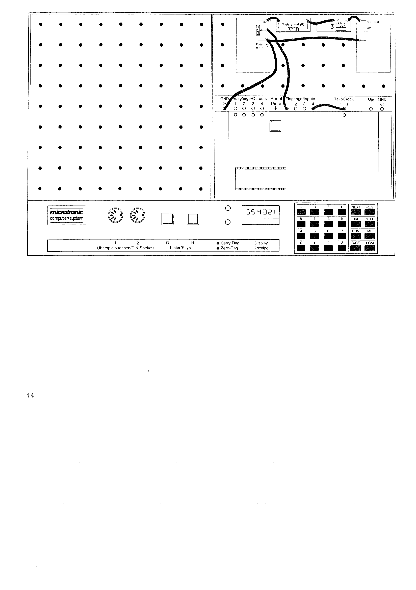
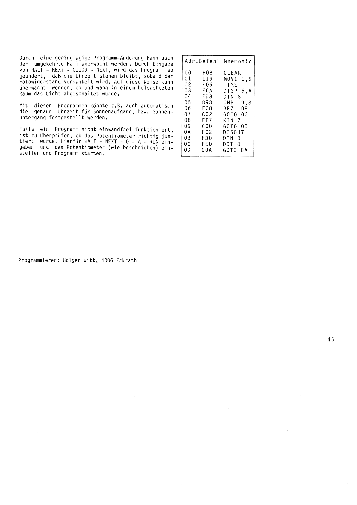
With a slight change to the program the opposite case can also be monitored. By entering HALT – NEXT – 01 109 – NEXT, the program is changed so that the time stops as soon as the photoresistor is darkened. In this way you can monitor whether and when the light was switched off in a lit room.
With these programs the exact time of sunrise or sunset could also be determined automatically, for example.
If a program does not work properly, check whether the potentiometer has been adjusted correctly. To do this enter HALT – NEXT – 0 – A – RUN, set the potentiometer (as described) and start the program.
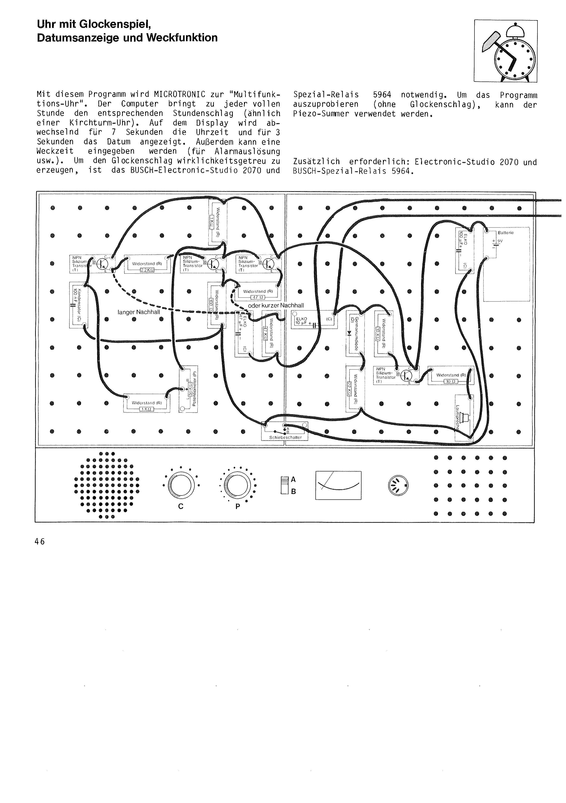
With this program MICROTRONIC becomes a “multi-function clock”. On every full hour the computer strikes the hour (like a church tower clock). The display alternately shows the time for 7 seconds and the date for 3 seconds. An alarm time can also be entered (for triggering an alarm, etc.). To produce the chime true to life, the BUSCH Electronic Studio 2070 and
special relay 5964 are needed. To try the program out (without the chime), the piezo buzzer can be used.
Additionally required: Electronic Studio 2070 and BUSCH special relay 5964.
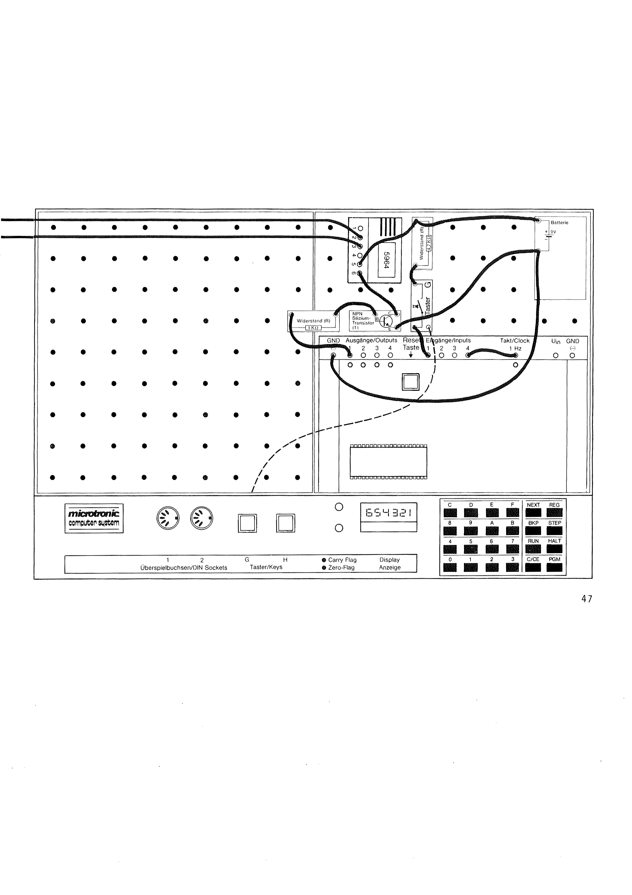
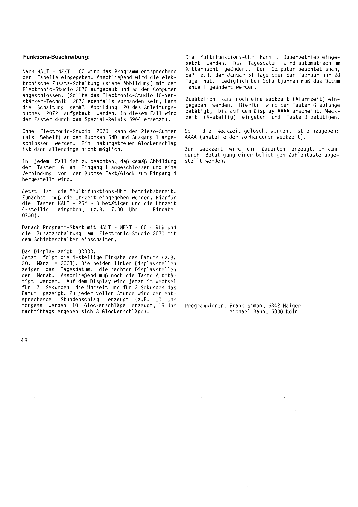
After HALT – NEXT – 00 the program is entered according to the table. Then the additional electronic circuit (see illustration) is built with the Electronic Studio 2070 and connected to the computer. (If the Electronic Studio IC amplifier set 2072 is available as well, the circuit can be built as shown in illustration 20 of the 2072 instruction book. In that case the push-button is replaced by the special relay 5964.) Without an Electronic Studio 2070 the piezo buzzer can be connected to the GND and output 1 sockets as a makeshift. A true-to-life chime is then not possible, however. In every case make sure that, as shown in the illustration, push-button G is connected to input 1 and that a connection is made from the Takt/Clock socket to input 4.
The “multi-function clock” is now ready for use. First the time has to be entered. To do this press the keys HALT – PGM – 3 and enter the time as 4 digits (e.g. 7.30 = entry: 0730). Then start the program with HALT – NEXT – 00 – RUN and switch on the additional circuit on the Electronic Studio 2070 with the slide switch.
The display shows: D0000. Now follows the 4-digit entry of the date (e.g. 20 March = 2003). The two left-hand display places show the day of the month, the right-hand display places the month. Then key A still has to be pressed. The display now shows the time for 7 seconds and the date for 3 seconds alternately. On every full hour the corresponding chime is produced (e.g. at 10 o'clock in the morning 10 chimes are produced, 3 p.m. gives 3 chimes).
The multi-function clock can be used in continuous operation. The day of the month is changed automatically at midnight. The computer also takes into account that January has 31 days or February only 28 days, for example. Only in leap years does the date have to be changed manually.
An alarm time can also be entered. To do this, push-button G is held down until AAAA appears on the display. Enter the alarm time (4 digits) and press key B. If the alarm time is to be cleared, enter AAAA (in place of the alarm time already there).
At the alarm time a continuous tone is produced. It can be switched off by pressing any number key.
Programmers: Frank Simon, 6342 Haiger
Michael Bahn, 5000 Cologne
With the World Time Calculation program the time can be worked out for any place on earth. All you need to know for this is the meridian of longitude the place lies on.
The earth is divided into so-called time zones. These time zones mean that within an individual country the same time applies everywhere. Otherwise the time in the west of Germany would differ from the time in the east of Germany by several minutes, for example. The World Time Calculation program does not take these time zones into account, but calculates the actual time (position of the sun) for the corresponding meridian of longitude.
After HALT – NEXT – 00 the program is entered according to the table. Then input 4 is connected to the Takt/Clock socket. After HALT – PGM – 3 the Central European Time (CET) is entered. During summer time 1 hour has to be added to CET.
Program start: HALT – NEXT – 00 – RUN.
The display shows: 0000. Say the computer is to work out the time for Tokyo. Tokyo lies on the 138th meridian (entry: 138). Then either key 0 has to be pressed (for the time of a city that lies to the east) or key 1 (if the city lies to the west). As Tokyo lies to the east of us, key 0 is pressed.
After a short calculating time the time for this meridian appears. If it is 17.36 CET here, for example, the result for Tokyo is 2.48. For a new time calculation press key 0. The display shows 0000 again.
If CET is to be displayed, either 0 degrees west (that is, 0001) or 360 degrees east (that is, 3600) has to be entered.
With this program electrical devices can be switched on and off “acoustically by remote control”. An electronic circuit (a colour-organ type circuit) converts sounds into low (0) and high (1) signals. The computer evaluates these 0 and 1 signals accordingly, so that its outputs are switched on and off by sounds that can be determined in advance.
After HALT – NEXT – 00 the program is entered as per the table. Then the electronic circuit (as per the assembly plan) is connected to the computer's input 1 and GND sockets.
The circuit has to be adjusted with the potentiometer so that the light bulb is switched on by hand-clapping or a telephone ringing, for example, and goes out again after a short time.
Program start: HALT – NEXT – 00 – RUN.
The display shows 0. The computer is waiting for the entry of how many sounds (hand claps, telephone rings or similar) are to switch its outputs on or off. Any entry number between 1 and 9 is possible, or the letters (A = 10, B = 11, C = 12, D = 13, E = 14, F = 15).
Example: the number 4 (for four sound intervals) is entered. The display goes dark. The computer outputs can now be switched on by clapping four times. Take care, however, to leave a short pause between each clap until the light bulb (of the circuit) has switched itself off again. In the same way (four claps) the computer outputs can also be switched off.
The program has some special features so that the switching cannot be carried out by unauthorised people. In our example we entered that the switching is triggered by four sounds. The computer counts the sounds internally (which are registered through the colour-organ type circuit). It is a condition, however, that the sound intervals are made without long pauses. If there is a pause of more than 3 seconds between the second and third clap, for example, the computer assumes that the sound entry has been broken off. After a break-off the following sounds are registered as a new start, that is, a third and fourth clap do not trigger any switching.
Once the computer has registered the number of sounds entered (4 in our example), its outputs are not switched on or off immediately. It now waits about five seconds and checks whether further sounds are received during that time. If a fifth clap comes within this five-second period, for example, the program is broken off by the computer. To trigger the switching, 4 sound intervals are required in this example. Fewer (3) or more (5) are not accepted.
Thanks to this checking, the program works absolutely reliably as a telephone switch, for example. The electronic sound-receiving circuit is set up so that a telephone ringing is registered. When dialling this telephone you have to let it ring as many times as was entered into the computer. If a stranger calls, they can only trigger the switching if they happen by chance to reach the number of sounds entered into the computer.
For telephone experiments, note that the Deutsche Bundespost forbids data transmission over its own telephone lines as a matter of principle, unless a corresponding application has been approved. Trials should therefore only be carried out with a house telephone system.
So-called “pie charts” are often used for the graphical presentation of tables or statistics. For this it is necessary to divide the percentage shares into “slices” of the right size (see illustration). The following program is a valuable aid in preparing pie charts for drawing. From the percentage values entered, the computer works out the angles in degrees for the corresponding sectors of the circle.
After HALT – NEXT – 00 the program is entered according to the table.
Program start: HALT – NEXT – 00 – RUN.
The display shows: 00.
The proportions making up air are to be shown in a pie chart. Air consists of 78% nitrogen, 21% oxygen and 1% noble gases. These percentages have to be converted into angles in degrees.
We enter the first percentage, for nitrogen (78). Then press key A. The display shows: 2808 = 280.8 degrees. Press key A. Enter the second value (21) for oxygen, press key A, the display shows 756 = 75.6 degrees. Key A, then the last entry for noble gases (1). Key A once more – display result: 36 (3.6 degrees).
With the values in degrees calculated by the computer, a pie chart with the corresponding sectors can easily be laid out and drawn:
In this way any number of divisions of the circle can be made. All you have to make sure of is that all the values of the circle's contents add up to 100% (as in our example 78% + 21% + 1%).
The way the program works is simple: the percentage entered is multiplied by 3.6 and you get the result in degrees. The program demonstrates how an individually programmed computer can be used as an important aid for a wide variety of tasks.
With this program the computer works out how many ways there are of drawing diagonals into a polygon. It is well known, for example, that in a quadrilateral only two diagonals are possible, while in a pentagon there are already five different possibilities (see drawing). The program can calculate the number of diagonals of all polygons with up to a maximum of 99 corners.
After HALT – NEXT – 00 the program is entered as per the table.
Program start: HALT – NEXT – 00 – RUN.
The display shows: 00. Entry e.g.: 10 (for a decagon). Then press key A. The result is shown immediately as four digits (0035 in this example), that is, 35 diagonals are possible in a decagon.
If key A is then pressed, the display shows 00 again. A new number for a polygon can be entered.
The number of diagonals is calculated by the following formula:
d = (n × (n – 3)) : 2
d = number of diagonals
n = number of corners
This big division program shows how MICROTRONIC can carry out complicated calculations too with a simple algorithm, for example division problems with any number of decimal places.
Example: 787 : 63 = 12.4920634920634920... With this problem MICROTRONIC will go on calculating and displaying decimal places until the program is broken off.
After HALT – NEXT – 00 enter the program as per the table.
Program start: HALT – NEXT – 00 – RUN.
The display shows: A0. The computer now offers three different possibilities.
Calculation of three decimal places, the last place being rounded up or down automatically. This possibility is selected with key 1. The display shows: 000.
Now the divisor (three places at most) is entered (e.g. 787). The entry is completed by pressing key A. Then the dividend (e.g. 63) is entered. This entry too must be completed with key A. The computer now calculates the division 787 : 63. The result before the decimal point appears on the display: 12. Pressing key 0 shows the three decimal places: 492. The complete result is therefore 12.49. A new program start is made with key 0.
Calculation of any number of decimal places. Four places are shown at a time. Pressing key 0 brings the next four places, and so on. The display shows: A0. Select this program run with key 2. Then enter the divisor and dividend. (Example 14 : 973 = entry: 14 then key A, then entry: 973 and key A again.)
The display first shows the result before the decimal point (0). If key 0 is pressed, the first four decimal places are shown (0143). After each press of key 0 the next four places appear. Complete result for this example: 0.01438848... The calculation of further decimal places can be broken off with key F.
Calculation of any number of decimal places, four places always being shown one after the other automatically. The display shows: A0. Select this program run with key 3.
After entering the numbers (do not forget key A) the result before the decimal point is shown first. With key 0 four decimal places are shown for a short time. The next four places follow automatically, and so on. The program is broken off and at the same time restarted with HALT – NEXT – 00 – RUN.
The algorithm for the big division program is relatively simple: with a problem such as 787 : 63 the two numbers are divided in the working and storage registers by the division instruction. The working registers then hold the result before the decimal point, 12. The remainder, 31, stays in the storage registers.
The decimal places are calculated further by multiplying the remainder (31) by 10 and dividing the result, 310, by 63 again. The first decimal place, 4, moves into the working register; the remaining remainder (58) is again multiplied by 10 in the storage registers and divided by 63. That gives the second decimal place. This process is repeated automatically until the program is broken off, so that any number of decimal places can be calculated.
The definition of prime numbers is given in the “Guinness Book of Records” as follows:
Prime numbers are all whole numbers (with the exception of 1) that are divisible only by themselves and by 1, e.g. 2, 3, 5, 7 or 11.
The smallest prime number is therefore 2; the largest known prime number (a number with 13395 digits) is 244497 – 1. It was reported as the highest prime number on 8 April 1979, after Harry Nelson (47) and David Slowinski (25) had worked on this calculation for two months with the help of a Cray One computer at the University of California (Lawrence Livermore Laboratory).
Prime numbers play a large part in mathematics. Prime number calculation is also often used in computer technology for so-called “benchmark” programs. With benchmark programs the calculating speed of different types of computer, or of different programming languages, can be compared. A computer is made to calculate the first thousand prime numbers one after the other, for example, and the time needed for this is measured. If these calculations are carried out with different computers, you get a very good comparison of their working speed.
With the following program all prime numbers between 0 and 99,999 can be calculated, or particular numbers can be checked to see whether they are a prime number.
After HALT – NEXT – 00 the program is entered carefully as per the table. Then connect the piezo buzzer to output 1 and socket GND. Program start with HALT – NEXT – 00 – RUN.
The display shows: 00000. If key C is pressed, the computer calculates the first prime number. It starts automatically with 1 (although this is not really a prime number at all). The result shown is announced at the same time by a buzzer tone. After each press of key
C the next prime number is calculated (2, 3, 5, etc.). The piezo buzzer can be switched off with key D. With key A the display is set back to 0. If key B is then pressed, any numerical value can be entered for a prime number check.
Example: press keys A and B one after the other. Then enter the number 500. Press key C. The computer checks whether the number entered (500) is a prime number. If it were, the number entered would be displayed again. As in our example the number 500 is not a prime number, the next higher prime number (503) is displayed. Key C can then be pressed again for the calculation of the next prime number.
When calculating larger prime numbers the calculating time may in some circumstances amount to several minutes. The piezo buzzer draws attention to the result found (switch the buzzer off with key D).
Programmer: Klaus Hallatschek,
9850 Neugablonz-Kaufbeuren
The following program shows that besides the four basic arithmetic operations (see the instruction books) MICROTRONIC can also carry out exponentiation. An example of exponentiation is 573 (57 × 57 × 57 = 185,193).
After HALT – NEXT – 00 the program is entered according to the table.
Program start with HALT – NEXT – 00 – RUN. The display shows 000.
Example: the problem 573 is to be calculated. First the number 57 is entered – then key A. The display shows: 00. Now the exponent 3 is entered – key A. After a short calculating time the display shows 185193 as the result. After pressing any number key a new calculation can be carried out.
If the result is too large (more than 6 digits), the display shows: EEEEEE.
Note that the power 0 to the power of 0 is not calculated correctly, because it is not mathematically defined.
On many pocket calculators exponentiation can be called up by pressing a key. In these calculators the microprocessor is programmed to carry out the exponentiation by repeated multiplication. The algorithm needed for this is quite simple. First it is checked whether the exponent is a 1. If yes, the base (57 in our example) is the result. If the exponent is greater than 1, the base is multiplied by itself (57 × 57 in our example) and 1 is subtracted from the exponent entered. If the exponent is now 1, the result has been found. If no, the result of the last calculation (57 × 57 = 3,249) is multiplied by the base entered (57 in our example) again. 1 is again subtracted from the exponent and it is then checked whether the exponent is now equal to 1 and the result has thus been found.
The flow chart makes this principle clear. Note that the flow chart shows only the actual calculating part. Special input and output routines are of course also needed for the program. The flow chart shows one more special feature: in exponentiation it has been defined that the result is 1 if the exponent is 0. For this reason it is checked before the actual calculation whether the exponent is equal to 0 – if yes, the result is automatically 1.
Ready-to-use plug-in module for easy installation.
For transferring (saving) computer programs onto cassettes or tape.
The digital computer signals are recorded by ordinary cassette recorders or tape machines. Transfer time for a full Microtronic program memory (256 addresses) approx. 4 minutes. 12–14 large computer programs can be stored on one C60 cassette.
On playback the interface turns the audio signals back into digital computer signals.